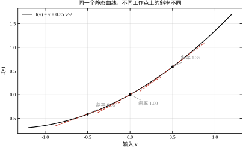
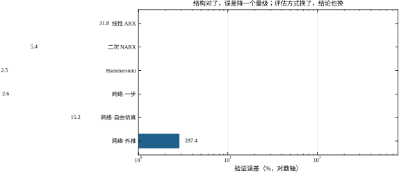
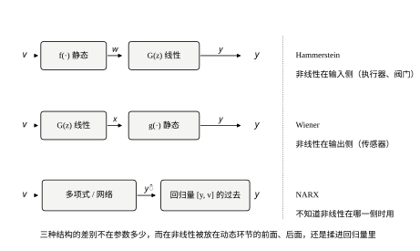
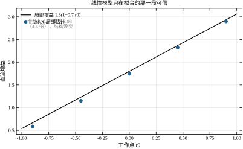
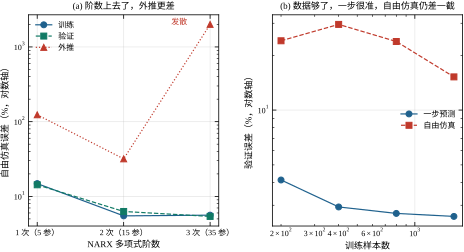
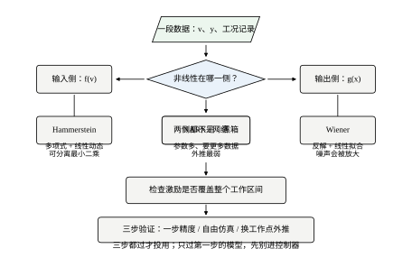

某换热站的温度回路，操作工在阀门开度 30% 附近做了一次阶跃，幅值 10%，记录到出口温度上升 0.9 ℃。按一阶惯性加纯延迟去拟合，得到静态增益 9.0 ℃/100%，拟合残差不到 3%，曲线与实测几乎重合。三个月后，同一条回路在开度 80% 附近又做了一次同样幅值的阶跃，温升 2.1 ℃，静态增益变成 21.0 ℃/100%，残差同样不到 3%。
两次数据都“拟合得很好”，可增益差了一倍多。现场通常的解释有三种：阀门磨损、换热器结垢、工况（入口水温、流量）变了。三种解释都指向“对象变了”，于是检修、清洗、重新整定，问题却还在——因为在 30% 和 80% 两个开度上，特性差异依旧。
真实的机制往往更简单：阀门流量特性本身不是直线。若流量与开度的关系是
f(v)=v+\beta v^{2},\qquad \beta=0.35 \tag{22-1}
那么局部斜率 f'(v)=1+2\beta v 随工作点线性变化：v=-1 处 0.30，v=0 处 1.00，v=+1 处 1.70，相差 5.7 倍。串上线性动态 G 之后，整个对象在工作点 v_0 附近的等效直流增益是
G_{\mathrm{eq}}(v_0)=G(1)\cdot f'(v_0)=1.8\,(1+0.7v_0) \tag{22-2}
从 v_0=-0.9 的 0.666 到 v_0=+0.9 的 2.934，跨度 4.4 倍。这不是对象“变了”，是对象一直如此，只是线性模型每次只截取了其中一小段。
图 22-2 把这条曲线与三个工作点上的切线画在一起。三条切线的斜率分别是 0.65、1.00、1.35，对应的等效增益是 1.17、1.80、2.43。任何一条切线在自己的邻域内都足够准，这正是问题难以自查的原因：局部验证永远通过，跨工作点才暴露。

把本章的 \beta=0.35 代回换热站的例子，可以算出这个机制能解释多少。把开度 0 至 100\% 线性映射到 v\in[-1,1]，30% 对应 v=-0.4，80% 对应 v=+0.6。两点局部斜率之比是
\frac{f'(0.6)}{f'(-0.4)}=\frac{1+0.7\times0.6}{1+0.7\times(-0.4)}=\frac{1.42}{0.72}=1.97
实测增益之比是 21.0/9.0=2.33。二次模型解释了 1.97，剩下 18% 可能来自入口水温、流量等工况差异。这个对比的意义不在于“模型不准”，而在于说明：一个二次项就能解释大部分差异，而现场把它归因于设备老化，方向从一开始就偏了。 先做这张对比，再决定要不要停机检修，省下的不只是维修费。
第 18 至 21 章建立的整套工具——ARX、ARMAX、PEM、工具变量、闭环辨识——都默认对象是线性的。线性假设下，增益是一个常数，辨识一次就够用一辈子；非线性假设下，增益是工作点的函数，辨识必须回答“在哪个范围内、误差多大”。本章要处理的，就是这条假设被打破之后，前面那些结论还剩多少、需要补什么。
面对两次阶跃对不上的情况，最常见的补救是“模型阶数不够”。既然三阶 ARX 拟合不好，就加到五阶、八阶；既然多项式不够，就上神经网络。这条路在某些场合有效，但在本章的算例上会给出一个很清楚的边界。
用一段覆盖 -1.2 到 +1.2 的多电平随机激励（每个电平保持 4 拍，800 点，噪声标准差 0.01）去拟合本章的对象，线性 ARX（n_a=3、n_b=3、n_k=1，带常数项）的验证误差是 31.79%，20 批蒙特卡洛的标准差只有 0.47 个百分点。这个误差不是噪声造成的，也不是数据不够——加数据不会让它下降，因为它是结构性偏差：一条直线去拟合一条抛物线，斜率取得再好，两端也必然偏。
把模型换成二次 NARX（n_y=2、n_u=2，含平方与交叉项，15 个参数），同一份数据的验证误差降到 5.41%；换成结构正确的 Hammerstein（8 个参数），降到 2.53%。图 22-4 把这几个数字画在对数轴上。三者的差距不是“调参调得好不好”，而是“模型里有没有那个二次项”。

神经网络的表现更能说明问题。1600 个训练样本、12 个 tanh 隐单元、输入为 [y_{k-1},y_{k-2},v_{k-1},v_{k-2}]，训练 2000 步之后：
同一个模型，三个数字差两个数量级。报告哪一个，决定了这个模型“能不能用”的结论。工程上真正关心的是自由仿真和外推，因为控制器投运之后，没有人会把真值喂给模型。
加阶数不管用，第一条原因是静态约束。 对 ARX 模型，稳态增益是 B(1)/A(1)——一个标量，与输入幅值无关。提高阶数只是在 A、B 里多放几个系数，让这个标量取到另一个值，或者在动态上多拟合几个转折，但它永远给不出一条随 v_0 变化的曲线。要描述式 (22-2) 那条随工作点变化的增益，模型里必须出现“输入幅值”或“输入平方”这样的项，而这在 y_k=-\sum_i a_i y_{k-i}+\sum_j b_j v_{k-j} 里根本不存在。这就是“结构性偏差”四个字的准确含义：它与数据量、与噪声水平、与优化算法都无关，只与模型类有关。把 800 点加到 8000 点，31.79% 会稳稳地停在 31.79% 附近——20 批蒙特卡洛的标准差只有 0.47 个百分点，恰好说明这个数不是被随机性撑起来的。
第二条原因是参数方差。 阶数加上去，参数随之增加，估计的协方差按式 (22-45) 的量级放大。exp5 里有一组直接对照：同一份训练数据（|v|\le0.6）、同一套验证集，二次 NARX 用 15 个参数，训练误差 5.49%、验证 6.28%；三次 NARX 用 35 个参数，训练误差 5.61%、验证 5.39%，训练集上的表现反而更差，外推则从 31.79% 直接发散（记作 nan）。多出来的 20 个参数没有带来新信息，只是让回归矩阵的条件数变坏：在 |v|\le0.6 这个窄区间里，v^3 与 v 的相关系数极高，两者的系数只能互相抵消着估，噪声一进来，抵消就失效。而三次项在训练区间外增长最快，一旦外推，这一点点估偏会被放大成发散。
由此得到一条可以照做的判据：加阶数时训练误差与验证误差要同时看。训练不再下降，说明这一阶没有带来信息；训练下降而验证上升，说明在拟合噪声；两者都在下降但误差仍停在可观的水平，说明瓶颈在结构，不在阶数。第三种情况最容易被误读成“还不够复杂”，于是继续加，一路加到发散——exp5 的三次 NARX 就是这条路的终点。
神经网络为什么在一步预测上追平、在自由仿真上掉下去。 训练时喂给网络的是真值 y_{k-1}、y_{k-2}，它只需要学“给定当前状态，下一拍往哪走”；自由仿真时把自己上一拍的输出喂回去，误差就按对象自身的动态速率累积。第 18 章讨论 ARX 自由仿真时说过，回路稳定性取决于 A(q) 的根；网络没有显式的 A，它的“极点”由雅可比矩阵在每一点处决定，而训练目标只约束了一步误差，从来没有约束这条回路的稳定性。这是 2.61% 与 15.22% 之间那道落差的来源，与网络容量无关：把隐单元从 12 加到 50，一步误差会继续降，自由仿真误差不一定跟着降。
外推的 287.44% 还有一层更朴素的机制。训练区间是 |v|\le0.6，验证区间整体上移到 0.3 至 1.5，落在外面的样本对网络来说是“没见过的输入”。tanh 单元在大输入下全部进入饱和区，输出的斜率趋于零，模型对输入的变化不再敏感——表现为曲线被压平，而不是按二次曲线继续上翘。多项式模型在外推时会发散，网络在外推时会变平，两种失效方式方向相反，但都不可用。工程上判断“能不能外推”的唯一办法，是把验证集放到训练区间之外去，而不是在区间内多切一段。
非线性模型不是一个模型，而是一族。工程上最常用的三种，区别只在于静态非线性被放在动态环节的哪一侧（图 22-1）。

Hammerstein 结构：非线性在输入侧，
w_k=f(v_k),\qquad y_k=\frac{B(q)}{A(q)}w_k+e_k \tag{22-3}
其中 q 为后移算子，A(q)=1+a_1q^{-1}+a_2q^{-2}+a_3q^{-3}，B(q)=b_1q^{-1}+b_2q^{-2}+b_3q^{-3}。物理对应是执行器非线性：阀门流量特性、变频器死区、加热丝辐射项、液压阀的开口面积。控制器输出 v 先经过一个静态映射变成“实际作用量” w，再进入线性动态。
Wiener 结构：非线性在输出侧，
x_k=\frac{B(q)}{A(q)}v_k,\qquad y_k=g(x_k)+e_k \tag{22-4}
物理对应是传感器非线性：热电偶的塞贝克系数随温度变化、pH 电极的能斯特方程在高浓度端弯曲、应变片的电桥输出在大应变下偏离线性。动态过程本身是线性的，测量环节把末端压弯了。
NARX 结构：不区分两侧，直接把输出写成过去输入输出的非线性函数，
y_k=F\big(y_{k-1},\dots,y_{k-n_y},\,v_{k-n_k},\dots,v_{k-n_k-n_u+1}\big)+e_k \tag{22-5}
F 可以是多项式，也可以是神经网络。它不假设非线性在哪一侧，代价是参数多、可解释性差、外推能力弱。
三种结构的选择依据不是“哪个精度高”，而是非线性在物理上发生在哪里。阀门特性属于执行器，用 Hammerstein；热电偶属于传感器，用 Wiener；如果两侧都有，就串成 Hammerstein-Wiener，或者退回 NARX。若连非线性是否存在都说不清，那要先做 22.6 节的残差检查，而不是直接上网络。
本章的实验都围绕一个线性部分展开：G(s)=\dfrac{1.8}{(0.5s+1)(0.12s+1)(0.03s+1)}e^{-0.04s}，采样周期 T_s=0.05 s。它与第 18 至 21 章完全相同，因此任何差异都只能归因于非线性，不会与对象更换、采样改变混在一起。
把若干关键结果先摆出来（全部来自同一份仿真输出，20 批蒙特卡洛的均值）：
| 模型 | 参数个数 | 验证误差 | 换工作点外推 |
|---|---|---|---|
| 线性 ARX | 7 | 31.79% | 明显失效 |
| 二次 NARX | 15 | 5.41% | 31.79%（v 到 1.5） |
| Hammerstein（m=2） | 8 | 2.53% | 9.76% |
| 神经网络（1600 样本） | 73 | 2.61%（一步）/15.22%（自由仿真） | 287.44% |
表中两个 31.79% 数值相同是巧合，来源不同：线性 ARX 那一格是 20 批蒙特卡洛的均值（22.3.6 节），二次 NARX 那一格是单批外推实验的结果（22.3.7 节）。
四个模型的参数个数从 7 到 73，验证误差却不是按参数多少排序的。8 个参数的 Hammerstein 比 15 个参数的 NARX 更准，因为它的结构里写进了“非线性在输入侧”这条物理事实；73 个参数的网络在一步预测上追平了 Hammerstein，但自由仿真掉到 15.22%，外推彻底失效。
这条主线可以概括成一句话：参数估计只能在给定结构内找最优，结构错了，最优也不对。第 19、20 章反复讲的“偏差与方差”在这里换了对象——那里关心的是噪声模型与阶数，这里关心的是非线性被放错了位置。
非线性辨识的第一道坎不是算法，而是判断“眼前的偏差到底是不是非线性”。
第一，非线性与时变。 工作点漂移会让增益随时间变化，看起来像参数漂移。两者的区别在于是否可重复：把工况退回原位，非线性对象的增益会退回原值，时变对象不会。第 23 章会专门处理慢时变与自适应；本章的所有结论都建立在“特性不随时间变”这个前提上。工程上区分二者的做法很朴素——在不同日期重复同一工作点的阶跃，看增益是否回到同一个数。本章 exp1 就是这条判据的定量版本：r_0=0 处换种子重跑，增益估计稳定在 1.74 附近；把工作点挪到 +0.9，同一个估计量跳到 2.90。前者是重复性，后者是系统性——重复性好的差异不可能是时变造成的。
第二，非线性与有色噪声。 有色噪声会让线性模型的残差呈现自相关，残差图看上去“有结构”，容易被误判成未建模的非线性。第 21 章已经给出过例子：闭环下噪声经控制器回流，u 与 e 的相关系数只有 0.037，却能把增益拉偏 6%。判断办法是先看残差与输入的关系：非线性残差通常与 v 的幅值或符号相关，有色噪声残差主要与时间间隔相关，与 v 的幅值无关。还有一个更硬的对照可用：噪声不动，只换结构。exp4 里同一份 Hammerstein 数据、同一噪声水平，线性 ARX 的验证误差 30.95%，换成 Hammerstein 结构立刻降到 2.42%；反过来对 Wiener 数据，线性 12.92%、Wiener 2.40%。噪声水平一分未改，误差降了一个数量级，说明这部分误差本来就是结构造成的，而不是噪声“漏”进了模型。
第三，非线性与未建模动态。 延迟估错一拍、快极点被忽略，也会让残差在特定频段抬起（第 21 章 §21.2.6 讨论过延迟与快极点在低频不可分）。这类误差的特征是“只在大幅快速激励下出现”，而真正的静态非线性在慢速大幅激励下同样出现。用一段慢斜坡扫过整个工作区间，如果误差随幅值单调增大，更像非线性；如果只在快速段出现，更像动态未建模。本章的数据之所以能把 31.79% 干净地归给静态非线性，是因为激励的带宽上限只有约 2.5 Hz（保持 4 拍、T_s=0.05 s），而对象最快的极点在 5.3 Hz 附近——那个极点根本没有被激励起来，残差里不可能有它的成分。反过来说，若把保持拍数改成 1、带宽抬到 10 Hz 以上，残差突然变大而低频段不变，就该怀疑动态，而不是继续加非线性项。
三个问题的共同点是：都能让线性模型的验证误差变大，但处置方式完全不同。把时变当非线性，会得到一个越用越偏的模型；把噪声当非线性，会得到一个在噪声水平下降时突然失效的模型；把动态当非线性，会得到一个在工作点扫描时表现正常的模型。
本章统一使用下列记号，后文不再重复说明。
| 记号 | 含义 |
|---|---|
| v_k | 控制器输出，也是辨识的输入变量 |
| w_k | 经过输入非线性后的中间变量，w_k=f(v_k) |
| x_k | 线性环节的输出，x_k=B(q)v_k/A(q) |
| y_k | 测量输出，y_k=x_k+e_k（Hammerstein）或 y_k=g(x_k)+e_k（Wiener） |
| f(\cdot) | 输入静态非线性，本章取多项式 |
| g(\cdot) | 输出静态非线性，本章取三次多项式 |
| \gamma_i | 非线性多项式的第 i 次系数，\gamma_1 固定为 1 |
| \beta | 输入非线性二次项系数，真值 0.35 |
| \gamma_w | 输出非线性三次项系数，真值 0.30 |
| n_a,n_b,n_k | 线性部分的极点阶数、零点阶数、纯延迟拍数，本章 3、3、1 |
| m | Hammerstein 多项式的最高次，实验取 1、2、3 |
| n_y,n_u | NARX 中输出、输入的滞后阶数，本章都取 2 |
三个非线性系数中，\gamma_1 固定为 1 不是笔误。Hammerstein 结构里 f 与 G 串联，把 f 整体乘以 \lambda、把 G 整体除以 \lambda，输入输出关系完全不变。这个尺度不定性必须在参数化阶段消掉，否则最小二乘的信息矩阵奇异，估计值会随初值乱跳。22.3.3 节会给出这个不变性的具体形式。
七节的分工如下。
如果读者手上正有一个“线性模型怎么调都不对”的回路，建议按 §22.1.5 的三个问题先排除时变、噪声、未建模动态，再用 §22.5.3 的四条判据决定要不要上非线性模型，最后用 §22.6.6 的三步验证决定是否投用。
如果读者想弄懂“为什么 8 个参数能打败 73 个参数”，主线是 §22.2.2 的参数化、§22.3.1 的可分离最小二乘、§22.3.6 的偏差-方差分解，最后回到 §22.3.5 的结构错配实验。这条线读完，再去看任何一篇用神经网络做系统辨识的论文，都能判断它的对比是否公平。
如果读者只关心怎么把模型用起来、不关心推导，可以直接读 §22.1.3 的结构选择、§22.5.4 的交付清单和 §22.6.6 的流程图，其余小节当手册查。但有一条不能跳过：§22.4.6 的三种指标口径。后面所有百分比都建立在这套口径上，口径不同，数字不可比。
先分清两个概念。静态指当前输出只依赖当前输入，没有记忆：w_k=f(v_k)。动态指输出依赖输入的过去：x_k 由 v_{k-1},v_{k-2},\dots 决定。线性动态可以用传递函数 G(q)=B(q)/A(q) 描述，非线性静态只能用一条曲线或一个多项式描述。
两者串联时，顺序不能交换。把 f 放在 G 前与放在 G 后，得到的是两个不同的对象：
y^{(H)}_k=G(q)\,f(v_k),\qquad y^{(W)}_k=f\big(G(q)\,v_k\big) \tag{22-6}
只有当 f 是线性函数时两者才相同。这个不可交换性不是数学游戏，它决定了辨识方法：Hammerstein 的未知量在 G 的输入端，Wiener 的未知量在 G 的输出端，前者可以用线性回归的技巧处理，后者不能。
为了看清差别，给一个正弦输入
v_k=A\sin(\omega kT_s) \tag{22-7}
经过二次非线性 f(v)=v+\beta v^2 之后，
f(v_k)=\frac{\beta A^2}{2}+A\sin(\omega kT_s)-\frac{\beta A^2}{2}\cos(2\omega kT_s) \tag{22-8}
出现了三项：直流 \beta A^2/2、基波（幅值 A）、二次谐波（幅值 \beta A^2/2）。再经过线性环节 G，三项各自乘以 G(1)、G(e^{j\omega T_s})、G(e^{j2\omega T_s})，互不混叠。
这一段小推导给出三个可用的结论。
第一，非线性产生新频率。 输入只有一个频率，输出却有直流和二次谐波。线性系统的频响测试之所以能成立，前提就是“输入一个频率、输出只有这个频率”；非线性打破了这个前提。工程上判断一个回路是否非线性，最直接的办法就是做正弦扫描，看输出频谱里有没有输入频率之外的峰。
第二，各次谐波被线性环节分别整形。 二次谐波的幅值是基波的 \beta A/2 倍，再乘以 |G(j2\omega)|/|G(j\omega)|。本章对象的三阶低通在 2\omega 处衰减更多，所以二次谐波在输出端被压小。这解释了一个常见现象：非线性明明存在，输出看起来却很“干净”——因为线性环节把证据滤掉了。用低频正弦去看，反而更容易发现。
第三，直流项让工作点漂移。 二次非线性把正弦输入抬出一个直流分量 \beta A^2/2，幅值越大，抬得越高。这就是 22.1.1 节两次阶跃对不上的频域解释：大幅激励不仅改变基波增益，还改变平均工作点。
把 f 取为 m 次多项式、G 取为三阶有理函数，Hammerstein 模型写成
A(q)\,y_k=B(q)\sum_{i=1}^{m}\gamma_i v_k^i+e_k \tag{22-9}
其中 A(q)=1+a_1q^{-1}+a_2q^{-2}+a_3q^{-3}，B(q)=b_1q^{-1}+b_2q^{-2}+b_3q^{-3}，e_k 为白噪声或近似白噪声。展开后是
y_k=-\sum_{i=1}^{3}a_i y_{k-i}+\sum_{j=1}^{3}b_j\sum_{i=1}^{m}\gamma_i v_{k-j}^{i}+e_k \tag{22-10}
对 a_i、b_j 是线性的，对 \gamma_i 是线性的，但对乘积 b_j\gamma_i 不是。这是 Hammerstein 辨识的核心难点：模型对两组参数分别线性，对联合参数双线性。
一个有用的视角是把它写成过参数化形式。定义
\delta_{ji}=b_j\gamma_i,\qquad j=1,2,3,\quad i=1,\dots,m \tag{22-11}
则
y_k=-\sum_{i=1}^{3}a_i y_{k-i}+\sum_{j=1}^{3}\sum_{i=1}^{m}\delta_{ji}v_{k-j}^{i}+e_k \tag{22-12}
这个模型对 \delta_{ji} 完全线性，可以直接最小二乘。但解出来的 \delta 是一个 3\times m 矩阵，真实值必须满足秩为 1：
\Delta=\begin{bmatrix}\delta_{11}&\cdots&\delta_{1m}\\ \vdots&&\vdots\\ \delta_{31}&\cdots&\delta_{3m}\end{bmatrix}=b\,\gamma^{\top} \tag{22-13}
其中 b=[b_1,b_2,b_3]^{\top}，\gamma=[\gamma_1,\dots,\gamma_m]^{\top}。忽略秩约束直接解，得到的 \Delta 几乎必然满秩（因为有噪声），对应的 b、\gamma 无法唯一还原。
所以 Hammerstein 辨识可以重述为一个约束最小二乘问题：
\min_{a,\,b,\,\gamma}\ \sum_k\Big(y_k+\sum_{i=1}^{3}a_i y_{k-i}-\sum_{j=1}^{3}b_j\sum_{i=1}^{m}\gamma_i v_{k-j}^{i}\Big)^2 \tag{22-14}
22.3.1 节会证明：这个双线性问题可以拆成两个线性最小二乘，交替迭代，每步都有闭式解。这是 Hammerstein 结构在工程上受欢迎的主要原因——它把一个非线性优化问题降成了两个线性回归。
参数个数要数清楚：a 有 3 个、b 有 3 个、\gamma 有 m-1 个（\gamma_1 固定）、常数项 1 个，共 m+6 个。m=2 时 8 个，与表 22-1 一致。这个数字在后面算数据量时会反复用到。
Wiener 模型把非线性放在输出侧：
x_k=\frac{B(q)}{A(q)}v_k,\qquad y_k=\sum_{i=1}^{m}\gamma_i x_k^i+e_k \tag{22-15}
它看起来只是把 Hammerstein 的两个环节调了个顺序，难度却完全不同。
Hammerstein 里，非线性作用在已知的输入 v_k 上，f(v_k) 可以直接算出来，剩下的是标准 ARX。Wiener 里，非线性作用在未知的中间变量 x_k 上，而 x_k 又被噪声污染：
y_k=g(x_k)+e_k \tag{22-16}
要估计 x_k，只能从 y_k 反解：
\hat{x}_k=g^{-1}(y_k) \tag{22-17}
反解把噪声也一并放大。对 (22-16) 在真值 x_k^\ast 处做一阶展开，
y_k\approx g(x_k^\ast)+g'(x_k^\ast)(x_k-x_k^\ast)+e_k \tag{22-18}
反解得到的偏差是
x_k-x_k^\ast\approx\frac{e_k}{g'(x_k^\ast)} \tag{22-19}
噪声方差被 1/[g'(x_k^\ast)]^2 缩放。本章取 g(x)=x+0.30x^3，g'(x)=1+0.90x^2。在 x=0 附近 g'=1，噪声不变；在 x=\pm1 处 g'=1.9，噪声被压到约一半；在 x=\pm1.5 处 g'=3.03，噪声只剩三分之一。大信号端的信噪比反而更好，这与 Hammerstein 正好相反——后者在大信号端非线性更强、模型误差更大。
还有一层困难：g 必须可逆。若 g 不单调（例如三次项系数为负、且幅值足够大），反解会出现多值，g^{-1}(y) 不唯一，整个方法失效。工程上判断 g 是否可逆，看传感器的输出是否随被测量单调；热电偶、应变片、pH 电极在正常量程内都单调，但接近饱和端会变平，g'\to0，反解噪声趋于无穷。这就是 22.5 节要强调的“非线性模型的适用区间”。
把 (22-15) 与 (22-9) 并排看，可以看出两种结构的估计难度差异：
| 项 | Hammerstein | Wiener |
|---|---|---|
| 非线性作用对象 | 已知输入 v_k | 未知中间量 x_k |
| 是否需要反解 | 不需要 | 需要 g^{-1} |
| 噪声如何进入 | 只加在输出端 | 反解时被 1/g' 放大 |
| 参数是否可分离 | 可（交替线性） | 不可（需非线性搜索） |
| 大信号端表现 | 模型误差大 | 信噪比好 |
这张表解释了为什么工业界用 Hammerstein 远多于 Wiener：不是 Wiener 不重要，而是它更难估。阀门特性几乎都是 Hammerstein，传感器非线性虽然普遍，但工程上更常见的做法是换一个线性更好的传感器，而不是去辨识 Wiener 模型。
NARX 不区分输入侧与输出侧，直接把当前输出写成过去输入、过去输出的函数：
y_k=F\big(\underbrace{y_{k-1},\dots,y_{k-n_y}}_{\text{输出历史}},\ \underbrace{v_{k-n_k},\dots,v_{k-n_k-n_u+1}}_{\text{输入历史}}\big)+e_k \tag{22-20}
把 F 取为多项式，就得到多项式 NARX。记回归量
z_k=\big[y_{k-1},\dots,y_{k-n_y},\,v_{k-n_k},\dots,v_{k-n_k-n_u+1}\big]^{\top}\in\mathbb{R}^{d},\qquad d=n_y+n_u \tag{22-21}
二次 NARX 写成
y_k=\theta_0+\sum_{i=1}^{d}\theta_i z_{k,i}+\sum_{i=1}^{d}\sum_{j=i}^{d}\theta_{ij}z_{k,i}z_{k,j}+e_k \tag{22-22}
项数是 1+d+d(d+1)/2。本章 n_y=n_u=2，d=4，二次共 1+4+10=15 项；三次再加 \binom{d+2}{3}=20 项，共 35 项。项数随阶数组合增长，而样本数不变，这就是 22.3.6 节要算的方差来源。
NARX 有一个容易被忽略的性质：它把 Hammerstein 与 Wiener 都包含成特例。若 F 对 v 的历史是一次、对 y 的历史是线性，NARX 退化为 ARX；若 F 对 v 的历史取二次，就近似 Hammerstein 的输入非线性，但多了一项 y 历史与 v 历史的交叉。反过来，Wiener 的输出非线性在 NARX 里表现为 y 历史的高次项。所以“用 NARX 一定更通用”这句话在数学上成立，在统计上不成立：通用性是用参数换来的。
Hammerstein 结构有一处天然的不定性。设 \lambda\ne0，令
f_\lambda(v)=\lambda f(v),\qquad G_\lambda(q)=\frac{1}{\lambda}G(q) \tag{22-23}
则
G_\lambda(q)\,f_\lambda(v_k)=\frac{1}{\lambda}G(q)\cdot\lambda f(v_k)=G(q)f(v_k) \tag{22-24}
输入输出完全一样，(f,G) 与 (f_\lambda,G_\lambda) 无法从数据上区分。这就是 22.1.6 节说“\gamma_1 必须固定”的原因：不固定，信息矩阵就有一个零特征值方向，最小二乘解会沿这个方向漂移。
固定 \gamma_1=1 相当于选定了尺度。也可以固定 \|b\|=1 或 \sum b_j=1，效果等价。选哪种取决于后续用途：若模型要接到控制器上，通常固定 G 的直流增益为辨识得到的值，让 f 承担形状。
尺度不定性只是“结构性不可辨识”的一种。还有一类“数据性不可辨识”：若输入 v 始终在 0 附近小幅波动，v^2 与 v、常数项高度相关，\gamma_2 与 b 无法分开。本章实验 7 给出了这个现象的定量结果：用幅值 \pm0.15 的小信号数据估计 \gamma_2，得到 0.4190，相对真值 0.35 偏了 +19.72%，验证误差 15.82%；换成覆盖 \pm1.2 的多电平数据，\gamma_2=0.3521，误差 +0.60%，验证误差 2.39%。
两个数字的对比说明：非线性模型的激励要求比线性模型高一个层次。线性模型只要求输入“足够丰富”（持续激励阶数），非线性模型还要求输入“覆盖足够宽”。前者可以用小幅白噪声满足，后者不能。
在 v_0 附近把 f 一阶展开：
f(v_0+\delta)\approx f(v_0)+f'(v_0)\delta \tag{22-25}
代入 y=G(q)f(v)，得到增量模型
\delta y_k\approx G(q)\,f'(v_0)\,\delta v_k \tag{22-26}
其直流增益是
G_{\mathrm{eq}}(v_0)=G(1)\,f'(v_0) \tag{22-27}
这正是 (22-2)。本章的 f'(v_0)=1+0.7v_0，在 v_0\in[-1,1] 上从 0.30 变到 1.70。表 22-1 给出五个工作点的数值。
| v_0 | f(v_0) | f'(v_0) | G_{\mathrm{eq}} |
|---|---|---|---|
| -1.00 | -0.650 | 0.300 | 0.540 |
| -0.50 | -0.412 | 0.650 | 1.170 |
| 0.00 | 0.000 | 1.000 | 1.800 |
| +0.50 | +0.588 | 1.350 | 2.430 |
| +1.00 | +1.350 | 1.700 | 3.060 |
这张表是本章所有“线性模型为什么不够”的源头。它同时定义了线性模型的有效区间：若要求增益误差不超过 5%，v_0 必须落在
\left|\frac{G_{\mathrm{eq}}(v_0)-G_{\mathrm{eq}}(v_r)}{G_{\mathrm{eq}}(v_r)}\right|\le0.05 \tag{22-28}
之内。以 v_r=0 为参考，|0.7v_0|\le0.05，即 |v_0|\le0.071。这么窄的区间在工程上几乎没有意义——一次正常调节的幅度就可能超出。这就是为什么非线性对象的线性模型“总在重新整定”：不是整定方法不好，是模型的有效区间比工况变化范围还小。
单隐层网络写成
y_k=W_2^{\top}\tanh\big(W_1z_k+b_1\big)+b_2 \tag{22-29}
其中 z_k 与 (22-21) 相同。它与多项式 NARX 的唯一区别是基函数：多项式用 z 的幂与乘积，网络用 \tanh 的平移缩放。万能逼近定理保证：只要隐单元足够多，网络可以在紧集上逼近任意连续函数。这句话有两个关键词——紧集与连续。
紧集意味着逼近只在训练数据覆盖的区域内有效。本章训练区间是 |v|\le0.6，验证区间上移到 0.3 至 1.5，超出训练上界 0.9，外推误差 287.44%。这不是网络没训好，是定理本来就不保证区间外。
连续意味着函数不能有跳变。阀门死区、继电器特性、摩擦的 Stribeck 段都不连续，网络只能逼近成一段陡坡，斜率极大，数值上容易震荡。
参数个数按 (22-29) 数：W_1 是 4\times12=48，b_1 是 12，W_2 是 12，b_2 是 1，共 73 个。相比之下 Hammerstein 只有 8 个。73 个参数需要多少数据？按经验每参数 10 至 20 个样本，约 700 至 1500 点，与实验 6 的 1600 点吻合；再少就会过拟合，实验里 200 点的一步误差 4.13%，400 点反而 2.94%，说明 200 点已经开始欠拟合。
把三种结构放在一个谱系上：
\text{线性 ARX}\ \subset\ \text{Hammerstein}(m=1)\ \subset\ \text{Hammerstein}(m\ge2) \tag{22-30}
\text{NARX}(d=4,\deg=1)\ \subset\ \text{NARX}(\deg=2)\ \subset\ \text{NARX}(\deg=3) \tag{22-31}
两个谱系在“线性”处相交，但往上的方向不同：Hammerstein 往“物理结构”走，NARX 往“函数容量”走。前者参数少、可解释、外推可控；后者参数多、通用、外推不可控。
工程选择的原则不是“哪个更先进”，而是能不能说清非线性发生在哪。说得清，就用 Hammerstein 或 Wiener，把物理知识写进结构；说不清，才退到 NARX 或网络，并且必须接受“只在数据覆盖范围内可信”这个限制。
进入推导之前，还有两个视角要补：频域怎么看这件事，以及噪声从哪个口进来。前者决定了现场频响测试能不能发现问题，后者决定了最小二乘在什么条件下还能用。
前面的推导都在时域。工程上更常见的做法是给对象一个正弦、看输出的幅值和相位，用频率响应判断“增益变了没有”。这套做法对线性系统严格成立，对非线性系统会给出一个危险的结论。
设输入为 v(t)=A\sin\omega t，代入 f(v)=v+\beta v^2，记 \theta=\omega t：
f(A\sin\theta)=A\sin\theta+\beta A^2\sin^2\theta=\frac{\beta A^2}{2}+A\sin\theta-\frac{\beta A^2}{2}\cos2\theta
三项分别是直流、基波、二次谐波。基波的幅值仍然是 A，与 \beta 无关。按描述函数的定义——基波相量除以输入相量——有 N(A)=1，对任意 A 成立。
也就是说，用零均值正弦做频响测试，二次非线性完全不改变基波增益。测出的波特图与线性对象一模一样，工程师会得出“这个对象是线性的”的结论。
但输出里多了两样东西：一个 \beta A^2/2 的直流偏置，一个频率为 2\omega、幅值为 \beta A^2/2 的二次谐波。前者会推动后续环节的工作点（如果后面还有非线性，或者闭环里有积分器），后者是偶次非线性的指纹。
这就把非线性分成两类，处置方式完全不同：
本章的增益从 0.540 变到 3.060，属于第二类：变化来自工作点 v_0，不是来自激励幅值。这也解释了为什么 22.1.1 的两次阶跃必须发生在不同开度——如果两次都在同一开度、只改阶跃幅值，测出的增益会几乎相同，现象根本不会暴露。现场“做一次阶跃看看”的做法之所以经常漏掉非线性，原因就在这里。
诊断含义很直接：怀疑二次非线性时，不要只看增益，要看输出的直流分量和二次谐波。把输入设成零均值正弦，输出若有明显的 2\omega 分量，就是偶次非线性；若基波幅值随 A 变，是幅值型非线性；两者都没有，才轮到怀疑时变与噪声。
闭环下还有一个后果。二次项产生的直流偏置会被积分作用“吃掉”：控制器为了让 y 跟上参考，会调整 u 的均值，直到偏置被抵消。结果是工作点自己移动到一个新位置，而这个位置又改变了局部增益。这就是 22.3.8 节超调随参考漂移的频域解释。
三种结构的噪声位置不同，这决定了哪种估计方法还能用。
Hammerstein 的两步，噪声待遇不一样。 第一步回归 y_k 对 y_{k-1},\dots 与 f(v_{k-1}),\dots，y 的滞后项里带着 e，若 e 有色，这一步有偏；第二步把残差投影到 B(q)v^i 上，投影基只含干净的 v，与 e 独立，所以 \gamma 的估计基本不受噪声颜色影响。本章 \gamma_2 估到 0.3547（偏差 1.3%），而 \hat G 偏 1.2% 至 5%，正是这个分工的体现。严格说“不受影响”是近似的：(a,b) 的偏差会传给 B(q)，再传给第二步的基函数，噪声越强这个传递越明显。
Wiener 是输出误差，而且经过反解。 噪声加在 g 之后，y_k=g(x_k)+e_k。反解得到 \hat x_k\approx x_k+e_k/g'(x_k)：噪声被 1/g' 放大，在 g' 小的区间尤其严重。最小二乘仍然一致（v 干净），但方差按 (1/g')^2 膨胀。这是 Wiener 辨识应该用大幅值数据的第二个理由，第一个是可辨识性（见 22.3.4）。
NARX 的回归量里含 y。 y_{k-1} 里含有 e_{k-1}。若 e 是白噪声，e_k 与 e_{k-1} 独立，最小二乘仍可用；若 e 是色噪声，e_k 与 y_{k-1} 相关，估计有偏。本章的噪声统一取 AR(1)、\rho=0.9，正是最不利于方程误差法的设置。之所以还能用，是因为偏差主要落在动态参数上，对非线性系数的污染较小；若噪声相关性更强或回路进入闭环，就必须换 PEM 或工具变量，那是第 20、21 章的工具。
这条差异也解释了 22.3.6 表中的一个细节：二次 NARX 的标准差（0.52%）比 Hammerstein（0.15%）大 3.5 倍。主要原因是参数多、回归量相关强；y 进回归量还额外带来一项与色噪声相关的偏差，只是在这组数据上不占主导。
线性系统的卷积
y(t)=\int h(\tau)v(t-\tau)\,d\tau
可以看成 Volterra 级数的一阶截断。把核推广到二阶、三阶：
y(t)=\int h_1(\tau)v(t-\tau)d\tau+\iint h_2(\tau_1,\tau_2)v(t-\tau_1)v(t-\tau_2)d\tau_1d\tau_2+\cdots
h_2 是一个二维函数，参数无穷多。Hammerstein 结构的二阶核有特殊形状：把 f(v)=v+\gamma_2v^2 代入线性卷积，
y(t)=\int h(\tau)v(t-\tau)d\tau+\gamma_2\int h(\tau)v^2(t-\tau)d\tau
第二项可以写成二重积分，其中核只在 \tau_1=\tau_2 时有值：
h_2(\tau_1,\tau_2)=\gamma_2\,h(\tau_1)\,\delta(\tau_1-\tau_2)
这叫对角核：二维函数的非零值只落在 \tau_1=\tau_2 这条线上，整条线由一维的 h 加一个标量 \gamma_2 决定。可分离最小二乘之所以能把它降成两个线性回归，根源就在这里：它估计的不是任意二维核，而是“一条对角线”。相比之下，一般的二阶 Volterra 核有 O(N^2) 个自由参数，Hammerstein 只有 O(N) 个加一个标量。
Wiener 结构的二阶核形状完全不同。y=g(x)、x=\int h(\tau)v(t-\tau)d\tau，把 g 展开到二次，第二项是
g_2\Big(\int h(\tau)v(t-\tau)d\tau\Big)^2=\iint g_2\,h(\tau_1)h(\tau_2)\,v(t-\tau_1)v(t-\tau_2)\,d\tau_1d\tau_2
核是 g_2h(\tau_1)h(\tau_2)——一个秩 1 的满矩阵（外积），能量分布在整个平面上，而不是集中在一条对角线。所以二阶 Volterra 核的形状本身就能区分两种结构：Hammerstein 是“对角线”，Wiener 是“外积”。单靠稳态曲线分不出来（两者都能拟合同一条静态曲线），但两音测试或阶跃起始段可以：Hammerstein 的互调分量在动态环节之前产生，先被 H(f_1\pm f_2) 滤波；Wiener 的互调分量在动态之后产生，携带的是 H(f_1)H(f_2) 的相位。两者的互调相位关系不同，这是频域区分它们的依据。
多项式 NARX 则不一样。它的 y 与 v 的交叉项对应非对角核，二阶核是一个满的二维矩阵。表达能力更强，参数从“一条对角线”涨到“整个矩阵”：d=4 时二阶项 15 个，若按一般 Volterra 核展开则远不止。参数效率的差距不是实现技巧，是核的结构假设带来的。
这也给出一条判断经验：如果对象的非线性确实发生在执行器或传感器这类“单点”环节，用 Hammerstein/Wiener 是用对了先验；如果非线性来自分布参数过程（例如管道里的流动非线性），对角核假设不成立，NARX 或 Volterra 才是合适的起点，但代价是参数与数据量都上一个量级。
回到 (22-14)。直接对 a、b、\gamma 一起优化，是一个双线性最小二乘问题，没有闭式解。但如果固定其中一组，问题立刻变成线性的。
第一步，固定 \gamma。 此时 f(v_k) 可以逐点算出，记 w_k=f(v_k)。模型变成标准 ARX：
y_k=-\sum_{i=1}^{3}a_i y_{k-i}+\sum_{j=1}^{3}b_j w_{k-j}+c+e_k \tag{22-32}
构造回归向量
\phi_k=\big[-y_{k-1},-y_{k-2},-y_{k-3},\,w_{k-1},w_{k-2},w_{k-3},\,1\big]^{\top} \tag{22-33}
把 N 个方程堆成 \Phi\in\mathbb{R}^{N\times7}、Y\in\mathbb{R}^{N}，解
\hat\theta_{ab}=\arg\min_{\theta}\|Y-\Phi\theta\|_2^2=(\Phi^{\top}\Phi)^{-1}\Phi^{\top}Y \tag{22-34}
这一步与第 18 章的 ARX 完全相同，只是把输入从 v 换成了 w。
第二步，固定 (a,b)。 令残差
\epsilon_k=A(q)\,y_k=y_k+\sum_{i=1}^{3}a_i y_{k-i} \tag{22-35}
由 (22-9)，\epsilon_k=B(q)f(v_k)。把 f 展开：
\epsilon_k=\sum_{j=1}^{3}b_j\sum_{i=1}^{m}\gamma_i v_{k-j}^{i}=\sum_{i=1}^{m}\gamma_i\underbrace{\sum_{j=1}^{3}b_j v_{k-j}^{i}}_{z_{k,i}} \tag{22-36}
关键在最后一步：z_{k,i} 只依赖已知的 v 与当前的 b，与 \gamma 无关。于是
\epsilon=Z\gamma,\qquad Z=[z_{\cdot1},z_{\cdot2},\dots,z_{\cdot m}] \tag{22-37}
对 \gamma 又是线性的。固定 \gamma_1=1 消掉尺度不定性，解
\hat\gamma_{2:m}=\arg\min\big\|\epsilon-z_{\cdot1}-Z_{2:m}\gamma_{2:m}\big\|_2^2 \tag{22-38}
两步交替，每步都是闭式最小二乘。这就是可分离最小二乘（separable least squares）。
它成立的根本原因，是 (22-36) 里的交换：B(q)\sum_i\gamma_i v^i=\sum_i\gamma_i B(q)v^i。线性算子 B(q) 与“逐点取幂”可交换，因为前者是卷积、后者是逐点运算。Wiener 结构没有这个性质——非线性在 B(q) 之后，g(B(q)v)\ne B(q)g(v)，所以不能这样拆。
两步都在最小化同一个目标函数
J(a,b,\gamma)=\sum_k\Big(y_k+\sum_i a_i y_{k-i}-\sum_j b_j\sum_i\gamma_i v_{k-j}^i\Big)^2 \tag{22-39}
第一步对 (a,b) 精确最小化，第二步对 \gamma 精确最小化，因此每一步 J 单调不增，且有下界 0，必然收敛。收敛到的点是 J 的驻点，满足
\frac{\partial J}{\partial a}=0,\qquad\frac{\partial J}{\partial b}=0,\qquad\frac{\partial J}{\partial \gamma}=0 \tag{22-40}
但双线性问题的驻点不唯一，初值决定落到哪一个。本章的实现从 \gamma=[0,1,0]^{\top} 出发——即先假设没有二次项，第一步退化为线性 ARX，得到一组 (a,b)；第二步在这组 (a,b) 上把残差投影到 B(q)v^2 上，长出 \gamma_2；再回到第一步。迭代 60 次，\gamma_2 稳定在 0.3547，与真值 0.35 相差 1.3%。
初值选“线性”有一个实际好处：若数据里其实没有非线性，第二步估出的 \gamma_2 会接近 0，模型自动退回线性。实验 4 的 Wiener 数据就出现了这个现象——用 Hammerstein 去拟合 Wiener 数据，估出的 \gamma_2=0.0008，算法自己把非线性项关掉了。这不是 bug，是可分离最小二乘的正确行为：在它的模型族里，最优解就是线性的那个。
收敛速度是线性的，比率取决于两个子问题的条件数。本章的回归矩阵条件数在 10^2 量级，60 次迭代足够；若输入幅值跨度很大（例如 v 从 0.01 到 10），v^2 与 v 的列尺度差 10^4，条件数恶化，需要先做列归一化，否则迭代会在两个解之间来回跳。
这个“线性收敛、比率由条件数决定”的说法可以再具体一层。把待估参数分成两块：\beta=(a,b) 与 \gamma。第一步是在固定 \gamma 时，把数据向量 Y 正交投影到 \Phi(\gamma) 的列空间上；第二步是在固定 \beta 时，把 Y 投影到 U\beta 张成的方向上。交替投影的收敛速率由这两个子空间之间的主角 \theta 决定：每一步的误差大致乘上 \cos^2\theta。两子空间接近正交时，\cos^2\theta 很小，两三步就到位；两子空间接近共线时，\cos^2\theta\to1，误差每步只缩一点点，看起来像“卡住了”。
这条几何解释直接对应一个工程现象：数据的工作点越单一，v 与 v^2 在数据段内的形状越像（都近似一条缓慢变化的曲线），两个子空间越接近共线，交替迭代越慢，估出的 \gamma_2 也越不稳。这与 exp7 的结果是同一件事的两个侧面——小幅单电平激励下 \gamma_2 误差 +19.72\%，多电平激励下降到 +0.60\%，差的不是算法，是数据让两个子空间分开了。
由此得到一条运行时判据：监控 \|\gamma^{(j+1)}-\gamma^{(j)}\|，不要只看迭代次数。若 60 次之后这个增量仍在明显下降，说明条件数撑不住交替迭代，应改用变量投影——把 \beta 用 \gamma 显式解出来代回去，只对 \gamma 做一维搜索。22.3.4 节处理 Wiener 结构用的就是这个思路，代价从“每步一次大回归”变成“每个候选 \gamma 一次回归”，在低维 \gamma 时反而更稳。
最后要交代“收敛到哪个驻点”。双线性问题的驻点不唯一，交替迭代落在初值附近的那个。从 \gamma=[0,1,0]^\top 出发，得到的是“离线性模型最近”的驻点，这通常正是物理上想要的：它把数据里能证实的那部分非线性估出来，估不出来的部分留给零。反过来，若从一个强非线性初值出发，可能收敛到一个 \gamma_2 更大、b 更小的解，目标函数值几乎相同，但外推行为完全不同。同一份数据、同一个目标函数、不同的初值，给出两个都“最优”的模型——这也是 22.3.3 节那套归一化约定必须写进交付文档的原因。
(22-23) 的尺度不定性意味着：同一份数据可以给出无穷多组 (f,G)，它们的乘积相同。固定 \gamma_1=1 只是选了其中一组。这组解的性质是：f 的线性项系数为 1，非线性形状由 \gamma_2,\dots,\gamma_m 承担；G 则吸收了全部的增益尺度。
这对使用模型的人有直接影响。
若模型要用来做前馈补偿，需要 f^{-1}。\gamma_1=1 时 f 在原点附近近似恒等，f^{-1} 容易求；若固定的是 \sum b_j=1，f 可能整体放大 10 倍，f^{-1} 的数值范围也随之放大。
若模型要接到控制器上（第 44、106 章的 PID，第 58、80 章的 MPC），控制器关心的是“给一个 v，输出会是多少”，即复合映射 G\circ f。此时归一化方式不影响闭环，但影响控制器内部对增益的估计：G 的直流增益与 f' 的乘积才是真实的局部增益。
若模型要写进报告给下一班人看，必须同时给出 \gamma 与 b，并注明归一化约定。只给 G 的波特图、不给 f 的曲线，等于把模型的一半藏起来了——读者无法判断这个模型在 v=1.0 时是否还可信。
Wiener 结构不能像 Hammerstein 那样拆成两步线性回归，因为非线性作用在未知的 x_k 上。本章采用最朴素的办法：对非线性系数做一维网格搜索，每个网格点上做一次线性拟合。
具体地，取 g(x)=x+\gamma_3x^3，\gamma_3\ge0 保证单调可逆。对每个候选 \gamma_3：
\hat\gamma_3=\arg\min_{\gamma_3\ge0}\ \min_{a,b}\sum_k\big(g^{-1}(y_k)-x_k(a,b)\big)^2 \tag{22-41}
网格取 [0,3] 上 61 点，步长 0.05。本章的结果：对 Wiener 数据（真值 \gamma_3=0.30），估出 \gamma_3=0.3000，验证误差 2.40%；对 Hammerstein 数据，估出的 \gamma_3 顶到网格上界 3.0，验证误差 98.42%。
后一个结果需要解释。为什么不是“估出一个中间值、误差中等”，而是“顶到边界、误差极大”？因为 Hammerstein 数据的非线性在输入端，输出端的 y 与 x 关系近似线性；Wiener 模型试图用输出端的立方项去解释输入端的二次项，两者形状根本不同（一个是奇函数、一个是偶函数）。网格搜索在所有 \gamma_3 上都找不到好解，只能一路推到边界。顶到搜索边界是一个明确的信号：结构错了，比“误差 15%”更有诊断价值。
噪声放大已经在 (22-19) 算过。这里补一个工程含义：Wiener 辨识的精度高度依赖工作点。若数据集中在小信号端（|x|\le0.3），g'\approx1，反解几乎不放大噪声，但 \gamma_3 的可辨识性也最弱——0.3x^3 在 x=0.3 处只有 0.0081，被噪声淹没。若数据集中在大信号端，\gamma_3 可辨识，但反解放大噪声的系数变小（g' 大），反而有利。所以 Wiener 辨识应该尽量用大幅值数据，这与 Hammerstein 的“大幅值端模型误差大”形成对照。
网格搜索的代价也要算清。每个网格点要做一次 N 点牛顿反解和一次 ARX 拟合，总计算量约为 61N，与一条线性辨识相比是 60 倍。本章 N=800，单次拟合仍在毫秒级，可以接受；若数据到十万点，就得先降采样或改用 profile likelihood。
分辨率同样是个问题。网格步长 0.05，最优点最多偏离真值 0.025；对 \gamma_3=0.3 来说，这是 8% 的量化误差。想再准，可以在粗网格找到极小值后，用黄金分割或三分法在相邻两个格点内细化到 10^{-3}，总评估次数只增加十几次。
比“最优点在哪”更有信息的是整条残差曲线。把 \gamma_3 从 0 扫到 3，记录每个格点的残差平方和：若曲线在内部有清晰的碗形极小值，结构可信；若曲线单调下降到边界，结构错了；若曲线在很宽的区间内几乎平，说明数据对 \gamma_3 不敏感，估出的值没有意义。第三种情况最危险，因为它会给出一个“看起来合理”的中间值，验证误差也不高，但换一批数据就变。看曲线形状，比看最优点可靠。
边界取多大也有讲究。本章取 [0,3]，是物理上界的 10 倍；若取 [0,0.6]，“顶界”可能只是人为限制，不能作为结构错的证据。规则是：上界必须显著大于物理可能值，下界取 0（对应无非线性），这样“顶界”与“贴零”两个诊断信号才有意义。
实验 4 用同一份多电平激励、同一噪声水平，分别生成 Hammerstein 与 Wiener 两组数据，再用三种模型去拟合。结果是一张 2\times3 的误差矩阵（表 22-2）。
| 数据 模型 | 线性 ARX | Hammerstein | Wiener |
|---|---|---|---|
| Hammerstein 数据 | 30.95% | 2.42% | 98.42% |
| Wiener 数据 | 12.92% | 12.91% | 2.40% |
对角线上的两个 2.4% 是“结构对了”的水平。非对角线上出现了两种完全不同的失败方式。
第一种是激进错误。 Hammerstein 数据用 Wiener 模型拟合，误差 98.42%，比线性模型的 30.95% 还差三倍。估出的 \gamma_3 顶到搜索上界 3.0。原因是 Wiener 模型强行在输出端加一个立方项，而数据里根本没有这个形状，立方项只能去拟合噪声与工作点漂移，越拟合越偏。错误的结构比没有结构更糟，这是本章最反直觉的一条结论。
第二种是保守错误。 Wiener 数据用 Hammerstein 模型拟合，误差 12.91%，与线性模型的 12.92% 几乎完全相同。原因是可分离最小二乘把 \gamma_2 估成 0.0008——算法发现输入端没有非线性，主动退回了线性。它没有变坏，但也没有变好：真正的非线性在输出端，Hammerstein 的结构里没有这一项，只能放弃。
两种失败方式对应两种诊断信号：
工程上，这比看验证误差更有用。验证误差只告诉你“不准”，系数位置告诉你“往哪里改”。
残差本身也能给出方向。把拟合后的残差 \hat e_k 对 [1,\,v_k,\,v_k^2,\,v_k^3] 做一次线性回归，看哪一项显著：
这套检查的成本是一次最小二乘，比重新拟合三种结构便宜得多，适合作为结构选择的第一步。它的局限是只能指出“缺哪一项”，不能区分“缺在输入端还是输出端”——因为输入端的 f(v) 与输出端的 g(x) 在稳态数据上几乎不可分。要区分，必须靠动态信息：输入端非线性在阶跃的瞬间就起作用，输出端非线性要等 x 建立起来才显现。看阶跃响应起始段的弯曲，比看稳态曲线更能定位非线性在哪一侧。
把均方误差拆成两项：
\mathbb{E}\big[(\hat y-y)^2\big]=\underbrace{\big(\mathbb{E}[\hat y]-y\big)^2}_{\text{偏差，结构决定}}+\underbrace{\mathbb{E}\big[(\hat y-\mathbb{E}\hat y)^2\big]}_{\text{方差，}\propto p/N} \tag{22-42}
偏差由模型族能否包含真实对象决定，不随样本数下降；方差由参数个数 p 与样本数 N 的比值决定，可以用数据换。
20 批蒙特卡洛的结果把这两项分得很清楚：
| 结构 | 参数 p | 验证误差均值 | 标准差 | 最差 |
|---|---|---|---|---|
| 线性 ARX | 7 | 31.79% | 0.47% | 32.55% |
| Hammerstein | 8 | 2.53% | 0.15% | 2.94% |
| 二次 NARX | 15 | 5.41% | 0.52% | 6.39% |
线性 ARX 的标准差最小（0.47%），因为它参数最少、结构最“硬”，换一批数据几乎不变——但它的均值 31.79% 是纯偏差，加数据降不下来。Hammerstein 只多一个参数，均值降到 2.53%，标准差 0.15%，是所有结构里最稳的。二次 NARX 参数翻倍，标准差涨到 0.52%，比 Hammerstein 大 3.5 倍，均值 5.41% 也更高——多出来的 7 个参数没有买到精度，只买到了方差。
这张表给出一个可操作的判据：若增加参数后验证误差没降、标准差反而涨，说明多出来的参数在拟合噪声。此时应该退回参数更少的结构，而不是继续加阶数。
实验 5 把训练区间限制在 |v|\le0.6，验证区间保持同分布，外推区间整体上移到 0.3 至 1.5。三种 NARX 阶数的结果：
| 阶数 | 参数 | 训练 | 验证 | 外推 |
|---|---|---|---|---|
| 1 | 5 | 14.84% | 14.29% | 123.48% |
| 2 | 15 | 5.49% | 6.28% | 31.79% |
| 3 | 35 | 5.61% | 5.39% | 发散 |
三次 NARX 在训练集与验证集上都最好（5.61%、5.39%），外推却直接发散——自由仿真跑几十拍之后数值溢出。原因很直接：三次多项式在 |v|>0.6 处增长极快，v^3 项的系数一旦估出非零值，外推到 v=1.5 时这一项放大 3.4 倍，再乘上 y 的高次项，正反馈把输出推到无穷。
同一区间上，Hammerstein 的外推误差是 9.22%，线性 ARX 是 110.45%。Hammerstein 能外推，是因为它的结构里写明了“非线性是输入端的二次多项式”，而这个事实在训练区间外仍然成立：f(v)=v+0.35v^2 在 v=1.5 处依然正确。它的外推能力来自结构正确，不是参数估得准。
但外推仍有限度。Hammerstein 的二次项在 v>1.5 之后继续增长，而真实阀门在某个开度之后会饱和，二次模型不会饱和。所以工程上给非线性模型写使用范围时，必须写清“适用于 |v|\le1.5”，而不是笼统地说“模型已验证”。
把三者放在一起，外推能力的排序是：
\text{结构正确且有界}\ >\ \text{结构正确但无界}\ >\ \text{结构错误}\ >\ \text{高阶多项式} \tag{22-43}
最后一项排在最后，是因为它的失败不是“慢慢变差”，而是“突然发散”。突然发散在闭环里是事故，慢慢变差只是性能下降。
除了排序，实验 5 还给出一个方法论上的结论：外推误差的大小取决于验证区间离训练区间多远，不取决于模型本身有多“聪明”。这次外推把区间中心平移了 0.9（训练中心 0、外推中心 0.9），Hammerstein 的误差从验证的 4.22% 涨到外推的 9.22%，翻了一倍多；再往外推，涨得更快。所以报告里不能只写“外推误差 9.22%”，必须写清外推的幅度——训练到哪里、用到哪里。两个数一起才构成一句可核对的话。
另一个容易犯的错是拿“验证集”当“外推集”。本章的验证集（种子 4）与训练集（种子 3）同分布，都落在 |v|\le0.6 内，它检验的是“换一份数据还准不准”，不是“出了区间还准不准”。三次 NARX 在验证上 5.39%、外推上发散，正是这两个指标的分离；22.6.4 节图 22-5 左右两半的曲线形状差别，归根到底也是这件事。工程上要判断一个非线性模型能不能覆盖更宽的工况，唯一的办法是在那个工况上单独采一小段数据做独立检验——数据少一点没关系，几十个点就足以看出模型是“偏”还是“崩”。崩的模型在图上不是慢慢离开数据，而是直接飞出去。
前面所有实验都是开环辨识：给定 v，记录 y。真实回路里 v 由控制器给出，而控制器会根据 y 调整 v，于是工作点随参考漂移。
用第 21 章的一组 PI 参数（K_c=1.0、T_i=0.5 s，按 v_0=0 附近整定）驱动本章的 Hammerstein 对象，参考取三个阶跃：
| 参考 | 超调 | 上升时间（90%） | y 峰值 | u 峰值 |
|---|---|---|---|---|
| 0.50 | 26.97% | 0.40 s | 0.635 | 0.631 |
| 1.00 | 33.57% | 0.35 s | 1.336 | 1.248 |
| 1.50 | 40.65% | 0.35 s | 2.110 | 1.851 |
同一组参数，参考从 0.5 升到 1.5，超调从 27% 涨到 41%，上升时间从 0.40 s 缩到 0.35 s。控制器的行为变了，但它一个参数都没改。
机制可以用 (22-27) 解释。参考 0.5 时，稳态工作点在 v\approx0.28，f'(0.28)=1.20，等效开环增益是 K_cG(1)f'=1.0\times1.8\times1.20=2.16；参考 1.5 时，工作点上移到 v\approx0.85，f'(0.85)=1.60，等效开环增益 2.88，涨了 33%。开环增益涨，相位裕度降，超调自然涨。
这解释了第 21 章结尾留下的那句话：闭环会让工作点随参考漂移。在线性对象上，工作点漂移不影响模型；在非线性对象上，工作点漂移直接改变模型参数。所以闭环下的非线性辨识比开环更难：不仅输入不可自由设计，连“在哪个工作点辨识”都不由工程师决定。
两条常用的出路：
一是增益调度。 按工作点把区间分成几段，每段辨识一个线性模型，控制器按当前工作点切换或插值。这是第 23 章的主题，本质上是“用多个线性模型逼近一个非线性对象”。
二是非线性补偿。 若 f 已知，在控制器输出后串一个 f^{-1}，把对象“拉直”，再用线性方法整定。这就是 Hammerstein 模型的直接用途：f^{-1} 把 v 映射成 w，对象对 w 就是线性的。本章的 f(v)=v+0.35v^2 在 v\ge-1/(2\beta)=-1.43 上单调，可以求逆；超过这个范围，f^{-1} 不存在，补偿失效。
两种出路都要求模型在整个工作区间内可信，而不只是在一个点上准。这正是 22.5 节要讲的适用边界。
实际对象常常两侧都不干净：阀门有流量特性，传感器有非线性。把两个静态非线性串在动态环节两边，得到
y_k=g\Big(\frac{B(q)}{A(q)}f(v_k)\Big)+e_k \tag{22-44}
中间信号 x_k 不可测，两个非线性互为遮罩：输出的弯曲既可以来自 f，也可以来自 g，单看输入输出无法区分。这是本章开头图 22-1 之外的一种结构，也是工程上最常见的一种。
它的尺度不定性有两处：f 与 G 之间可以互相缩放，G 与 g 之间也可以。所以要固定两个常数，通常取 \gamma_1=1 与 g 的一次项系数为 1。少固定一个，信息矩阵就多一个零特征值。
辨识通常走三步交替：固定 g 反解出 \hat x，用 Hammerstein 的两步法估 f 与 G；固定 f 与 G 算出 x，用多项式回归估 g；再回到第一步。每一步都是线性最小二乘或一维搜索，但三步之间的耦合比 Hammerstein 强得多，初值不好会收敛到“两个非线性互相抵消”的解——f 上弯、g 下弯，复合起来近似线性，验证误差很小，模型却完全没有物理意义。
判断这类伪解的办法只有一个：看两个非线性的形状是否符合物理。阀门流量特性通常是单调上凸或下凹，传感器的非线性通常单调且曲率符号固定；若估出的 f 与 g 曲率相反、幅度还很大，多半是伪解。
工程上的稳妥做法是先用物理知识固定一侧。阀门厂家给了流量特性曲线，就把它当作已知的 f，只估传感器非线性；热电偶的分度表已知，就固定 g，只估执行器。只估一侧时，问题退化成 22.3.1 或 22.3.4 的单侧情形，可辨识性与数值稳定性都好得多。
两侧都未知、又都很弱时，更省事的做法是直接上 NARX：它能拟合，但参数没有物理含义，外推不可控，也说不清非线性到底在哪一侧。这是“能拟合”与“能解释”之间的取舍，本章的立场是：只要还能做物理分解，就不要放弃结构。
线性最小二乘的协方差有闭式：
\operatorname{cov}(\hat\theta)=\hat\sigma^2(\Phi^\top\Phi)^{-1},\qquad \hat\sigma^2=\frac{\|Y-\Phi\hat\theta\|^2}{N-p} \tag{22-45}
对角线的平方根就是各参数的标准误。用它做 t 检验：|\hat\gamma_2|/\mathrm{se}(\hat\gamma_2)>2 才谈得上“这个非线性项显著”；若置信区间跨零，正确的处置是退回线性模型，而不是保留一个统计上无法与零区分的二次项。
Hammerstein 的两步法不能直接套 (22-45)，因为 \gamma 与 (a,b) 交替估计，参数之间的耦合没有进入这个公式。可用的替代有两种：一是对残差做 bootstrap，重采样后重跑整套两步法，收集 \gamma 的分布；二是换噪声种子重跑，即本章 exp8 的做法。两者给出的都是蒙特卡洛标准误，含义比解析公式更保守，因为它把交替迭代的路径依赖也算进去了。
这里要区分两种误差，它们的处置完全不同：
本章的线性 ARX 就是典型：20 批蒙特卡洛的标准差只有 0.47%，置信区间窄得漂亮，可均值偏了 31.79%。置信区间窄，只说明“这批数据把参数定得很准”，不说明“参数离真值很近”。 报告里只给标准误、不给验证误差，等于用精度掩盖偏差。
因此本章的表格统一报三样：参数值、验证误差、跨工作点或外推误差。第一样回答“估出了什么”，第二样回答“在数据覆盖范围内准不准”，第三样回答“出了范围还能不能用”。三样都齐，读者才能判断这个模型该不该用。
PID 的具体整定方法见第 44 章与第 106 章，MPC 的非线性扩展见第 58 章与第 80 章，Smith 补偿在非线性对象上的变形见第 47 章与第 107 章，本章只负责把模型交出去。
前面三节把三种结构写成公式，公式落到代码只需要四个动作：搭回归矩阵、解最小二乘、交替两步、算三个指标。这四个动作每一个都有一步之差就全盘错的细节。本节按“先搭矩阵、再讲一个真实 bug、然后两种拟合、最后三种指标”的顺序展开，代码在 code/ch022_sim.py，函数名与正文一一对应。
所有线性参数的拟合最终都归结为同一个方程：
\underbrace{\begin{bmatrix}\varphi_{k_0}^\top\\ \vdots\\ \varphi_{N-1}^\top\end{bmatrix}}_{\Phi}\theta=\underbrace{\begin{bmatrix}y_{k_0}\\ \vdots\\ y_{N-1}\end{bmatrix}}_{Y},\qquad \varphi_k=\begin{bmatrix}-y_{k-1}\\ \vdots\\ -y_{k-n_a}\\ u_{k-n_k}\\ \vdots\\ u_{k-n_b-n_k+1}\\ 1\end{bmatrix} \tag{22-46}
三处约定必须在写第一行代码之前定死，否则后面每个数字都会带着一个看不见的偏移：
第一，y 的列取负号。 模型写成 A(q)y_k=B(q)u_k 时，a_1y_{k-1} 移到右边就成了 -a_1y_{k-1}。\theta 里存的因此是 -a_i 而不是 a_i。这一步忘了取负，极点会从单位圆内翻到单位圆外，闭环仿真立刻发散，症状极其显眼，反而不容易错到底。
第二，u 的列从 u_{k-n_k} 开始。 本章 n_k=1，第一列是 u_{k-1}，对应一拍纯延迟。为了让同一个 filt 函数既能表达延迟又能表达无延迟，代码里把 B 写成升幂数组并在前面补一个零：b = [0, b1, b2, b3]，递推时 \sum_j b_j u_{k-j}，j=0 项的系数是零，自然空出一拍。这样“延迟”只体现在数组第一个元素，不再散落在循环下标里。
第三，起点 k_0=\max(n_a,\,n_b+n_k-1)。 本章 n_a=n_b=3、n_k=1，k_0=3，前 3 拍没有完整回归量，只能丢掉。N=800 时实际参与拟合的是 797 行。这个数看着无关紧要，但它决定了后面所有验证指标的分母长度；若拟合用一个长度、验证用另一个长度，两边的百分比就没法直接比。
build_reg 返回 (\Phi,Y)，arx_fit 只做一次 lstsq，把结果拆成 (a,b,c)。拆的时候要记住 \theta 的第一段是 -a，所以返回前要补上 a_0=1 并取负还原。
第一版 build_reg 没有最后一列 1。理由听起来很正当：线性系统是齐次的，输入为零输出为零，常数项没有物理意义。跑 exp1，在 r_0=0 的工作点上，增益估计的误差是 +83.86\%。
原因不在最小二乘，在数据的均值。工作点实验的记录是围绕 v_0=0 上下摆动的小信号，y 的均值不为零。没有常数项时，模型只能靠调整 a、b 去凑这个非零均值，等价于强行要求稳态关系过原点：
y_0=\frac{\sum b_j}{1+\sum a_i}u_0 \quad\text{（无常数项时被强制成立）} \tag{22-47}
而真实关系是 y_0=G(1)f(v_0)+c_0，只要 f(v_0)\neq0，这条直线就不过原点。最小二乘为了同时拟合“斜率”和“截距”，只好把截距摊到 a、b 上，G(1)=\sum b/\sum a 就被拉偏了。加上一列 1 之后，同一个工作点的误差从 +83.86\% 落到 -3.06\%，五个工作点的误差区间是 -11.80\% 至 -1.20\%。
这里有一条可以照搬的判据：只要数据的均值不为零，回归量里就必须有常数项，哪怕对象的微分方程里一个常数都没有。常数项不是物理项，是坐标系原点的补偿。
Hammerstein 的拟合难在 \gamma 与 (a,b) 相乘。但给定其中一组，另一组就是普通最小二乘，所以交替即可：
gamma ← [0, 1, 0, ..., 0] # 固定 gamma1 = 1
重复:
(a, b, c) ← arx_fit( poly_v(v, gamma), y ) # 第一步：给定 gamma 拟合线性部分
eps ← A(q) y # 残差
Z[:, i] ← B(q) v^i , i = 2..m # 投影基，与 gamma 无关
gamma[2:] ← lstsq( Z, eps - B(q)v ) # 第二步：给定 (a,b) 拟合 gamma
若 max|Δgamma| < 1e-11 则退出第二步值得单独看一眼。由 A(q)y=B(q)\sum_i\gamma_iv^i 得
A(q)y-B(q)v=\sum_{i=2}^{m}\gamma_i\,B(q)v^i \tag{22-48}
右边对 \gamma_i 是线性的，而每个基函数 B(q)v^i 只依赖数据与已估出的 b，与 \gamma 无关。所以这一步不需要非线性优化，一次 lstsq 就够。\gamma 不在基函数里出现，是“可分离”三个字的全部含义。
两个实现细节：
\gamma_1=1 写在初始化里，不写在约束里。 尺度不定性意味着 (\lambda\gamma,\;G/\lambda) 给出同一组输入输出，信息矩阵必定奇异。处理办法不是加罚项，而是直接把这个自由度从参数向量里删掉——\gamma_1 不参与估计，永远等于 1。这样第二步的未知数只有 m-1 个，矩阵满秩。
列归一化只在必要时做。 本章 |v|\le1，v 与 v^2 的列范数同量级，条件数在 10^2 量级，不必处理。若输入跨度从 0.01 到 10，v^2 与 v 的列尺度差 10^4，条件数恶化到 10^8 以上，lstsq 的截断会把小奇异值对应的方向整个丢掉，\gamma_3 估出来就是噪声。这时应先把每列除以自己的范数，解完再还原；不要用加大 rcond 的办法硬扛，那等于主动丢信息。
收敛判据用参数增量的无穷范数，上限 60 次只是保险。这个交替格式在正确结构下收敛很快，因为每一步都在降低同一个残差平方和，而参数维度很低；真正的风险不是不收敛，是收敛到 \gamma_2<0 这类物理上不可能的驻点——那说明数据里的非线性方向与假设相反，该换结构而不是继续迭代。
多项式 NARX 的实现只有一件事要注意：项不是你手写的，是生成的。四个回归量 [y_{k-1},y_{k-2},v_{k-1},v_{k-2}] 在二次时产生 15 项，三次时 35 项，手动排列必然漏项或重项。代码用 combinations_with_replacement 枚举指数向量，再按总次数筛，顺序固定为“常数项在前、次数从低到高”，这样不同阶数的模型可以直接比较系数。
两个数值问题：
共线与岭化。 y_{k-2} 与 y_{k-1} 高度相关，y_{k-1}^2 与 y_{k-1}y_{k-2} 也高度相关，\Phi^\top\Phi 的最小特征值可能落到 10^{-12} 以下。代码里加 \lambda=10^{-10} 的岭项，只改奇异方向的解，不改主子空间。岭化在这里不是为了防过拟合，是为了让 lstsq 不报秩亏。
发散护栏。 三次模型在训练区间外自由仿真会数值溢出。代码在递推里加了一句判断：累加结果非有限或超过 10^6 就截断。这不是数学，是工程——没有它，一次外推实验会让整个脚本抛 overflow 警告，几十个数字全部变成 nan，而错误信息指向乘法，不指向真正的原因（模型本身不适用）。加了护栏之后，发散被记成 inf，在汇总表里显示为“发散”，读者一眼能看出这是结构问题而不是数值问题。
单隐层 12 个 \tanh 单元、输入 4 维、输出 1 维，共 73 个参数。写成矩阵形式是
h_k=\tanh(W_1z_k+b_1),\qquad \hat y_k=W_2h_k+b_2 \tag{22-49}
损失取均方误差，梯度由反向传播给出：
\frac{\partial J}{\partial W_2}=\frac{1}{N}\sum_k(\hat y_k-y_k)h_k^{\top},\qquad \frac{\partial J}{\partial W_1}=\frac{1}{N}\sum_k\big(W_2^{\top}(\hat y_k-y_k)\big)\odot\big(1-h_k^2\big)z_k^{\top} \tag{22-50}
优化器用 Adam，学习率 5\times10^{-3}，2000 步。结构简单到这个程度，训练仍然能踩三个坑：
坑一：参数别名。 第一版把偏置写成标量再装进列表，Adam 原地更新的是列表里的副本，函数返回的却是原来那个标量。现象是训练越久越差：500 步训练误差 0.5587，8000 步反而 1.3353。这类 bug 不会报错，只会让“多训一会儿”变成负优化。修法是把所有参数统一成 ndarray 直接放进列表，返回值从列表里取，不做 float() 转换。
坑二：\tanh 饱和与梯度爆炸。 输入未标准化时，y 的幅值到 2 以上，第一层加权和后落入 \tanh 的平坦区，梯度接近零，训练停滞；反过来，输出端残差大时梯度又会冲高，一步把权重推到饱和区。代码里做两件事：输入按训练段均值方差标准化，梯度按范数裁剪到 5.0。裁剪阈值不是调出来的最优值，是“比正常梯度大一个量级”的经验上界。
坑三：数据量与目标不匹配。 图 22-5(b) 是四组样本量的结果：
| 训练样本 | 一步误差 | 自由仿真误差 | 外推误差 |
|---|---|---|---|
| 200 | 4.13% | 24.03% | 337.68% |
| 400 | 2.94% | 29.56% | 303.73% |
| 800 | 2.71% | 23.81% | 265.83% |
| 1600 | 2.61% | 15.22% | 287.44% |
样本从 200 加到 1600，一步误差从 4.13% 降到 2.61%，降幅 37%；自由仿真误差从 24.03% 降到 15.22%，降幅 37%；外推误差在 266% 至 338% 之间来回，没有任何下降趋势。三个指标对数据的敏感度完全不同：一步误差很快饱和，自由仿真误差缓慢改善，外推误差根本不看数据量。所以用一步误差选数据量，会得出“200 个样本就够”的结论；而闭环里用的是自由仿真，这个结论是错的。
三个坑的共同点是都不会报错。参数别名让损失平滑地升上去，看起来像“学习率太大”；\tanh 饱和让梯度变成一串零，看起来像“已经收敛”；数据量不足让一步误差漂亮、自由仿真难看，看起来像“网络不行，换更深的”。三种现象都能引向错误的处置，而正确的做法只有一条：训练过程中同时打印验证误差与自由仿真误差，任何一项停住或反向，就停下来查代码与数据，而不是加步数。本章的 2000 步不是调出来的最优值，是“三个指标都进入平台”之后停的。
三种指标的形式一样，分母不同：
J_{\text{1步}}=\frac{\|y-\hat y^{(1)}\|}{\|y-\bar y\|},\qquad J_{\text{自由}}=\frac{\|y-\hat y_{\text{free}}\|}{\|y-\bar y\|},\qquad J_{\text{去均}}=\frac{\|(y-\bar y)-(\hat y-\bar{\hat y})\|}{\|y-\bar y\|} \tag{22-51}
\hat y^{(1)} 用实测的 y_{k-1},y_{k-2} 做回归量，每拍都把真实值喂回去；\hat y_{\text{free}} 只用 u 和初值，自己生成 y。前者衡量“模型在当前点上准不准”，后者衡量“模型能不能独立跑”，闭环设计只看后者。
J_{\text{自由}} 的分母是去均值后的范数，分子却包含稳态偏差。这个不对称是故意的：波动是“信号”，偏差是“错误”，两者都该算进误差；但若分母也用全范数，偏差会同时出现在分子分母里，互相抵消，31.79% 会显示成 3%。代价是当偏差远大于波动时，指标会爆掉——exp1b 里用 r_0=0 的模型去预测 r_0=-0.9 的工作点，稳态偏差 -0.447，波动误差 152.12\%，这个数字没有直观意义，只说明“偏得离谱”。
所以跨工作点比较必须换成 J_{\text{去均}}，把偏差和形状分开报：
| 预测的工作点 | 稳态偏差 | 波动误差 |
|---|---|---|
| r_0=-0.90 | -0.447 | 152.12% |
| r_0=+0.45 | -0.152 | 28.73% |
| r_0=+0.90 | -0.555 | 41.86% |
注意 -0.90 与 +0.90 对称，偏差却是 -0.447 与 -0.555，不对称——因为 f(v)=v+0.35v^2 本身不对称，负侧的斜率小、正侧的斜率大，同一个线性模型在两侧的欠估程度不同。若只看 J_{\text{去均}} 的 152%，会以为模型连形状都错了；看稳态偏差才知道，形状误差只有几十个百分点，剩下的是工作点错位。
三个指标各自回答一个问题：一步误差回答“参数估得准不准”，自由仿真误差回答“模型能不能替代对象跑”，外推误差回答“模型能不能出训练区间”。写报告时三个都要给，只给一个等于替读者做了他没授权的假设。
Wiener 辨识的每一步网格搜索里，都要解一次
x+\gamma_3x^3=y \tag{22-52}
\gamma_3\ge0 时左端严格单调（导数 1+3\gamma_3x^2\ge1），所以对任意 y 有唯一实根，反解有定义。牛顿迭代格式是
x^{(j+1)}=x^{(j)}-\frac{x^{(j)}+\gamma_3\big(x^{(j)}\big)^3-y}{1+3\gamma_3\big(x^{(j)}\big)^2} \tag{22-53}
初值取 x^{(0)}=y，理由是 \gamma_3y^3 在小信号端很小，y 已经在根附近；迭代上限 20 次，终止判据 |\Delta x|<10^{-12}。本章数据实测 4 至 6 步收敛。
三个失败模式要记住：
一是 \gamma_3<0。 此时 g 非单调，方程可能有三根，反解不唯一。这不是数值问题，是模型设定问题——负的三次项意味着传感器在大信号端“折返”，物理上罕见，一旦估出负值应先怀疑数据。
二是 g' 接近零。 牛顿步长里有 1/g'，g' 小的时候一步能跨过根，迭代在两个值之间振荡。\gamma_3\ge0 时 g'\ge1，不会发生；若把模型换成 g(x)=x/(1+\gamma x^2) 这类饱和型，g' 会趋零，就必须改用二分或牛顿—二分混合。
三是 y 的噪声被放大。 反解把 e 变成 e/g'，\gamma_3 越大、x 越大，g' 越大，放大反而越小。这解释了一个反直觉的现象：Wiener 辨识在大信号端信噪比更好，不是更差——虽然非线性更强，但反解的噪声压缩也更强。真正差的是小信号端：g'\approx1，噪声不压缩，而 \gamma_3x^3 又小到测不出，参数不可辨识。
不想反解也有办法：把 x_k 当作隐状态，直接最小化输出端的仿真误差 \sum(y_k-g(\hat x_k))^2，用 Levenberg–Marquardt 同时优化 (a,b,\gamma_3)。这样噪声不被反解放大，代价是优化非凸、要初值、每次迭代都要跑一遍仿真。本章选反解加网格，是因为它简单、可复现，而且能把“结构错”这个诊断信号（系数顶到边界）暴露得很干净。
ch022_sim.py 按“对象—工具—实验”三段组织，每段只依赖上一段：
| 段 | 函数 | 作用 |
|---|---|---|
| 对象 | sim_linear、sim_hammerstein、sim_wiener |
给定 v 生成 y，签名统一 |
| 工具 | filt、poly_v、build_reg、val_err |
与结构无关的公共件 |
| 拟合 | arx_fit、hammerstein_fit、wiener_fit、narx_fit、mlp_fit |
每种结构一个入口 |
| 实验 | exp0 至 exp8、main |
只调用上面三段，不实现算法 |
三个约定让这个结构站得住：
对象函数签名统一。 三个 sim_* 都接受 (v,\ \gamma,\ \text{noise},\ \text{seed})，返回 y。这样换结构做对照实验（exp4 的 2\times3 矩阵）时，上层代码一行不用改，保证了“差异只来自结构”。
噪声在对象函数内部生成，种子显式传入。 不在全局设 np.random.seed，因为多个实验共享进程，全局种子会互相污染，出现“单独跑对、一起跑错”的现象。每个实验用独立种子，重复运行逐位一致。
实验函数只写文件，不打印。 所有输出追加到一个文本块，main 统一计时。这样长输出可以重定向到文件，不会因为终端缓冲丢行；也方便把整份输出当作正文的数字来源，逐条核对。
要换一个对象试，只改常量区的四个数：BETA、GAMMA_W、N_DEF、RHO。算法的其余部分与对象无关——这正是“结构写在代码里、参数写在常量里”的好处。
非线性模型估的是“曲线”，不是“点”。曲线要有形状，数据就必须在横轴上铺开。
实验 7 用同一对象、同一辨识算法、同一噪声水平，只换激励：
| 数据 | \hat\gamma_2 | 相对真值 0.35 | 验证误差 |
|---|---|---|---|
| 多电平（0,\pm0.3,\pm0.6） | +0.3521 | +0.60\% | 2.39% |
| 小幅单电平（\pm0.15） | +0.4190 | +19.72\% | 15.82% |
小幅激励下，数据只覆盖 [-0.15,0.15] 这一小段，v^2 在这一段上的变化量约为 0.0225，与噪声同量级，二次项几乎不可观测。算法没有报错，参数也收敛，只是收敛到了错误的值：\gamma_2 高估 20%，验证误差 15.82%——这个误差在“看起来还行”的区间里，很容易被放过。
图 22-3 从另一个角度看同一件事。横轴是工作点 r_0，纵轴是等效直流增益。直线是解析式 G_{\mathrm{eq}}(v_0)=1.8(1+0.7v_0)，散点是五个工作点上用线性 ARX 估出的 G。五个点全部落在直线下方，偏差从 -11.80\% 收窄到 -1.20\%。
散点系统性偏低，原因不在“平均斜率”——对二次曲线，对称窗口两端连线的斜率恰好等于中心点斜率，几何上不该有偏差。偏差来自二次谐波：f 在窗口内产生一个 2\omega 分量，经动态环节后与基波混在一起，而 ARX 的结构里没有 2\omega 这一项，只能在拟合基波时让步，把增益压低。两侧不对称（负侧 -11.80\%，正侧 -1.20\%）说明谐波相对基波的相位也参与了这件事，而相位随工作点变。这条机制在 22.2.9 节已经埋下：二次项不改变基波，但它产生的东西会以别的方式回来。

| r_0 | G_{\mathrm{true}} | \hat G（ARX） | 相对误差 |
|---|---|---|---|
| -0.90 | 0.6660 | 0.5874 | -11.80\% |
| -0.45 | 1.2330 | 1.1515 | -6.61\% |
| 0 | 1.8000 | 1.7449 | -3.06\% |
| +0.45 | 2.3670 | 2.3199 | -1.99\% |
| +0.90 | 2.9340 | 2.8987 | -1.20\% |
误差随工作点靠近零而收窄，但两侧并不对称：负侧到 -11.80\%，正侧只有 -1.20\%。若偏差只来自“窗口内的平均斜率”，两侧应大致对称，因为 f 的曲率是常数。不对称说明还有第二重来源：二次项在窗口内产生的谐波经动态环节后与基波叠加，叠加的相位随工作点变化。工程含义是，把激励幅值取小并不能消掉这个偏差——幅值压到一定程度，二次项就完全埋进噪声里，偏差从系统性变成随机性，模型反而更不可信。这也解释了为什么现场的“检修、清洗、重调”不起作用：每次局部拟合都很好，偏差只在跨工作点时才显形。
由此得到两条关于激励的工程规则：
幅值要覆盖使用范围，而不只是“能激动起来”。 若回路实际会在 |v|\le1 内运行，辨识数据的幅值就不能只到 0.2。宁可用多电平随机信号把整个区间铺满，也不要为了“信噪比好看”把幅值压小——压小换来的是更干净的数据和更错的模型。
幅值也不能超过物理范围。 阀门开度到 100% 会饱和，泵流量到额定值会限幅，这些饱和是真实存在的非线性，但把它们混进 Hammerstein 的二次项里，会把执行器饱和误当成对象非线性，估出的 f 在正常区间内反而是错的。数据采集时要记录执行器是否触限，触限段要么剔除，要么单独建模。
激励信号本身也要设计。三种常用形式各有分工：
PRBS（伪随机二进制序列）。 只有两个电平，频谱接近白噪声，保持拍数 H 决定能量上界：f_{\max}\approx1/(2HT_s)。本章 H=4、T_s=0.05 s，f_{\max}=2.5 Hz。对象的三个极点对应时间常数 0.50 s、0.12 s、0.030 s，转折频率约 0.32 Hz、1.33 Hz、5.3 Hz——PRBS 覆盖了前两个，最快那个几乎激不出来。这不是设计失误：5.3 Hz 已接近 Nyquist（10 Hz），且被 0.04 s 的纯延迟进一步削弱，它在数据里的信噪比本来就低。保持拍数按“要估到哪一阶”选，估不到的极点要在报告里写明，而不是假装它被估准了。
多电平随机信号。 在每个保持窗内从若干电平里随机取一个，幅值分布可控。本章取 0,\pm0.3,\pm0.6 五级，好处是二次项在整个区间上都有变化量，且电平数少、切换清晰。电平取太多会接近高斯分布，尾部容易触限；取太少又退化成 PRBS。工程上 3 至 5 级是好折中。
扫频（chirp）。 频率随时间线性或对数变化，频谱在扫过的频段上平坦，适合看频响。缺点是同一时刻只有一个频率，非线性产生的谐波会落在其他频点，容易被误读为“对象在这些频点也有响应”。用它做非线性辨识，必须先把谐波认出来。
长度也有下限。要看清 0.32 Hz 的动态，数据段至少覆盖该频率的 5 至 10 个周期，即 5/0.32\approx16 s，约 310 拍；本章取 800 拍，最低频率 1/(800\times0.05)=0.025 Hz，余量充足。长度买的是低频信息，幅值买的是非线性信息，两者不能互相替代——这也是 22.5.2 节要把“数据量”与“激励覆盖”分开算的原因。
按经验，线性回归每个参数需要 10 至 20 个样本；非线性模型的下限可以照这个数估，但上限要高得多，因为参数之间相关，有效自由度低于参数个数。
本章三个结构的成本对照（单批，同一台机器）：
| 结构 | 参数 | 训练耗时 | 验证误差 |
|---|---|---|---|
| 线性 ARX | 7 | 3.1 ms | 31.79% |
| Hammerstein | 8 | 18.8 ms | 2.53% |
| 二次 NARX | 15 | 6.7 ms | 5.41% |
训练耗时在这个规模上都不是问题——最贵的 Hammerstein 也只有二十毫秒量级（表中数值随机器波动，量级不变），因为它要交替迭代几十轮。真正稀缺的是数据，不是算力。N=800 时 Hammerstein 的 8 个参数对应每参数 100 个样本，余量充足；若换到 15 个参数的二次 NARX，N=800 就只有每参数 53 个样本，方差开始显现（标准差 0.52%，是 Hammerstein 的 3.5 倍）。
一条粗略的预算公式：
N\ \gtrsim\ (10\sim20)\times p\times\kappa_{\text{相关}},\qquad \kappa_{\text{相关}}\approx 2\sim5 \tag{22-54}
p 是参数个数，\kappa_{\text{相关}} 是回归量之间的相关带来的折扣。对线性 ARX，\kappa\approx1；对多项式 NARX，y_{k-1} 与 y_{k-2} 相关，\kappa 取 3 左右；对神经网络，参数虽多但共享隐层，有效自由度介于 p 与 \sqrt{p} 之间，公式只能给数量级。
把本章的三个结构代进去，可以看清 N=800 到底处在什么位置。Hammerstein 取 p=8、\kappa\approx1，下限是 80 至 160，800 点是五到十倍的余量，所以它的 20 批标准差只有 0.15%。二次 NARX 取 p=15、\kappa\approx3，下限是 450 至 900，800 点正好压在下限上，标准差立刻涨到 0.52%——这是本章最典型的一个“刚好够用”的样本量。线性 ARX 取 p=7、\kappa\approx1，下限 70 至 140，样本量富余得很，可它的误差仍是 31.79%，因为误差的来源根本不是方差。这张对照表说明：预算公式只管方差，管不了偏差；样本量够不够，和模型对不对，是两个独立的问题。
网络那一行要特别小心。按公式粗算，73 个参数、\kappa 取 1，下限是 730，N=800 似乎刚够；但 exp6 的结果是 800 点自由仿真误差 23.81%、1600 点才降到 15.22%，都远高于同参数量的多项式模型。原因在于“有效自由度”这个折算太粗：网络的参数是共享的，单个参数的方差小，但函数在输入空间里的弯曲程度不受参数个数约束，训练目标又只约束一步误差。对网络，预算公式给的是“不会过拟合到爆”的下限，不是“自由仿真能收敛”的保证，后者要用验证曲线单独确认。
以下四条，命中任意一条都应先退回线性模型：
一是线性模型的验证误差已经接近噪声水平。 若线性 ARX 的自由仿真误差是 2%，而测量噪声本身就有 2%，剩下的差异已经在噪声里，非线性项估出来也是噪声。判据不是“误差是不是零”，是“误差是否已经落到噪声带内”。
二是工作点几乎不变。 定值调节、且参考与负荷长期不动的回路，工作点漂移不超过 \pm0.45 时，线性模型的增益误差在 7% 以内（22.3.8 节），用非线性模型的收益抵不上建模与维护成本。
三是控制器带宽远低于对象非线性起作用的时间尺度。 非线性若只影响高频段（例如阀门的死区与滞环），而回路带宽只有其十分之一，闭环看到的是平均效应，线性模型加一点鲁棒裕度就够。
四是数据里根本没有非线性证据。 用线性 ARX 拟合后，残差与输入互相关仍在置信带内、残差自相关也白，说明线性结构没被拒绝。这时硬套 Hammerstein，m=2 估出的 \gamma_2 应该在零附近——exp4 里用 Wiener 数据拟 Hammerstein，\gamma_2=0.0008，正是这个信号。\gamma_2 估成零不是失败，是模型在告诉你“这一侧没有非线性”。
反过来，什么时候该上？看 exp1 的五个工作点：线性模型在每个点上都能拟合，误差 -11.80\% 至 -1.20\%，单看任何一个点都“能用”；但用一个点的模型去预测另一个点，稳态偏差到 -0.45，波动误差 152%。当模型需要跨工作点使用时，局部线性模型必然失效，这是非线性建模最硬的需求来源。
线性模型的交付很简单：一个传递函数、一个适用频段、一个不确定度。非线性模型多三样东西，少一样就没法用：
第一，结构与其物理位置。 “Hammerstein，非线性在执行器”与“Wiener，非线性在传感器”是两种完全不同的模型，前者可以串 f^{-1} 做补偿，后者不能——传感器非线性在反馈通道里，补偿要放在测量之后，而那时噪声已经被 1/g' 放大过。交付时必须写明非线性发生在哪一侧，不能只给一个输入输出拟合。
第二，适用范围。 不只是“|v|\le1.5”这样的数值范围，还要写明“该范围内 f 单调”、“该范围内未出现执行器饱和”。22.3.7 节已经看到，Hammerstein 的外推误差在训练区间内是 2.71%（m=2），整体上移到区间外后涨到 9.76%，把非线性项加到三次才降到 5.24%——它外推得比 NARX 好，但仍有边界；越界之后二次项继续增长，而真实对象会饱和。
第三，失效模式。 模型怎么坏，比模型多准更重要。本章三种结构的失效方式完全不同：线性 ARX 是“处处偏一点”，闭环里表现为超调随工作点漂移（27% 到 41%）；高阶 NARX 是“突然发散”，闭环里是事故；网络是“训练区间内很好、区间外乱给”，闭环里表现为参考大阶跃时输出异常。交付文档里写清失效模式，运行时才能设计对应的保护逻辑。
三样之外还有一项，常被当作可选项，实际上不是：不确定度与它的来源。线性模型的参数标准差可以直接由式 (22-45) 给出；两步法与交替迭代都不能直接套这个公式，因为第一步的回归量含 y、第二步的回归量含估出来的 b，误差在两块之间来回传递。可行的做法只有两个：bootstrap（对残差重采样、重跑整个两步流程，取分位数）与换种子重跑（exp8 的 20 批）。本章用的是后者，得到 Hammerstein 2.53±0.15、二次 NARX 5.41±0.52、线性 ARX 31.79±0.47。这三个标准差本身就携带信息：线性 ARX 的标准差最小，误差却最大，说明它的偏差是结构性的、重复性极好；二次 NARX 的标准差最大，说明它的解对数据扰动更敏感，换一批数据可能差半个百分点以上。
还要提醒一句容易忽略的：交付文档里的区间必须写清“是对哪个量、在哪个数据分布下”。22.3.10 节已经给过一个反例——线性 ARX 在 20 批数据上的重复性极好（标准差 0.47 个百分点），均值却偏了 31.79%。窄区间只说明“换一批数据结果差不多”，不说明“离真值近”。把这两件事混为一谈，是交付文档里最常见的一处误导：读者看到 \pm0.47，会以为这个模型“很准”，而它其实非常稳定地错着。
本章的产物是一个对象模型，后面各章消费它：
本章不涉及控制器设计，也不涉及参数随时间的漂移（时变）。前者是后面各章的事，后者属于递归辨识与自适应控制的范畴，本章的所有结论都建立在“参数在数据段内不变”这个前提上。
把本章的结论压成一张可以照着勾的表。十项里任何一项没做，都不算“模型已完成”：
| 序号 | 检查项 | 合格标准 | 不合格的后果 |
|---|---|---|---|
| 1 | 激励幅值覆盖使用范围 | 数据里的 \lvert v\rvert 上界不低于实际最大值的 90% | 非线性项估不出，\gamma 高估 |
| 2 | 执行器未触限 | 数据段内无饱和标记 | 饱和被误当成对象非线性 |
| 3 | 训练段与验证段独立 | 不同时间段或不同种子 | 验证误差虚低 |
| 4 | 回归量含常数项 | 数据均值不为零时必须有 | 增益偏差可达几十个百分点 |
| 5 | \gamma_1 已固定 | 参数向量里没有 \gamma_1 | 信息矩阵奇异，结果随初值跳 |
| 6 | 条件数已查 | \mathrm{cond}(\Phi)<10^{6} | 系数不可信，正负号都可能反 |
| 7 | 非线性系数显著 | \lvert\hat\gamma_2\rvert/\mathrm{se}>2 | 保留了一个等于零的项 |
| 8 | 三指标齐全 | 一步、自由仿真、外推都报 | 报告只覆盖了最容易的那个 |
| 9 | 适用范围写明 | 数值区间加单调性、饱和条件 | 下一班人越界使用 |
| 10 | 失效模式写明 | 说清模型怎么坏 | 运行时没有对应的保护逻辑 |
第 4 项与第 5 项是“一次错、全盘错”的类型，检查成本几乎为零，却最容易被跳过；第 7 项是唯一一项需要统计工具的，其余都可以靠看数据和看代码完成。第 9、10 项不属于辨识，属于交付，但它们决定了模型在别人手里能用多久。
模型有保质期。以下五种情况出现任意一种，就应该重做辨识，而不是继续调参数：
一是工作范围扩大。 原来只在 30% 至 60% 开度运行，改造后要跑到 85%。原模型的外推区间正好是它最不可信的地方（22.3.7 节：训练区间内 2.71%，区间外 9.76%）。
二是执行器或传感器更换。 换阀门意味着 f 变了，换热电偶意味着 g 变了，哪怕型号相同，安装位置与响应时间也可能不同。这类变化用残差检查最容易发现：残差与输入的互相关突然抬起。
三是工艺配方或负荷结构变化。 换热器的结垢、催化剂的失活，会改变线性部分的动态，但通常不改变静态非线性。若验证误差变大而 \gamma 估计稳定，问题在线性部分；若 \gamma 也变了，说明非线性环节也动了。
四是验证误差连续超阈值。 单次超阈值可能是工况波动，连续三次超阈值才是模型失效。阈值取多少取决于工艺容忍度，一般取交付时验证误差的两倍。
五是数据采集链路变动。 换了变送器量程、改了滤波系数、动了采样周期，都会让“同一段历史数据”与“当前数据”不可比。采样周期变化尤其隐蔽：本章所有结论都建立在 T_s=0.05 s 上，T_s 一改，n_k、极点、甚至非线性的可辨识性全变。
与自适应控制的界限也要说清：参数缓慢漂移、结构不变，用递归辨识在线更新，那是第 23 章与后续自适应章节的内容；结构变了（非线性位置、阶数、延迟），必须离线重辨识，在线算法救不了。判断的办法是看残差：残差均值漂移多半是参数漂移，残差出现新的周期性结构多半是结构变了。
本章的全部数字来自同一份脚本，没有手工填入的中间结果：
"D:\Anaconda3\envs\py311\python.exe" code\ch022_sim.py # 约 3.3 s，输出 build\_ch022_sim.txt
"D:\Anaconda3\envs\py311\python.exe" code\ch022_figs.py # 输出 figs\ch022 下 6 组 svg/pdf脚本只依赖 numpy 与 scipy，所有随机数都显式给种子：训练段与验证段用不同种子（3 与 4），蒙特卡洛的 20 批用 0 至 19。换机器、换系统，结果逐位一致；换种子，百分比会动，但结论的排序不变——22.6.5 节的蒙特卡洛就是用来证明这一点的。
九个实验的分工如下：
| 实验 | 内容 | 回答的问题 | 关键数字 |
|---|---|---|---|
| exp0 | 静态工作点表 | 增益随工作点变多少 | 0.540 至 3.060 |
| exp1 | 五个工作点的局部 ARX | 局部模型偏多少 | -11.80\% 至 -1.20\% |
| exp1b | 跨工作点预测 | 一个点的模型能走多远 | 偏差 -0.447，波动 152.12% |
| exp2 | 闭环三个阶跃 | 超调随参考怎么变 | 26.97% 至 40.65% |
| exp3 | Hammerstein 阶数 | m 取到几 | 2.71%（m=2） |
| exp4 | 2\times3 结构错配 | 结构错要付多少 | 98.42% 与 12.91% |
| exp5 | NARX 阶数 | 多项式到几阶停 | 三次外推发散 |
| exp6 | 网络数据量 | 要多少样本 | 一步 2.61%，外推 287.44% |
| exp7 | 激励覆盖 | 幅值影响多大 | +0.60\% 与 +19.72\% |
| exp8 | 20 批蒙特卡洛 | 结论稳不稳 | 31.79±0.47 |
exp0 只做一件事：在五个工作点上求 f(v_0)、f'(v_0) 与 G_{\mathrm{eq}}(v_0)。它不涉及任何辨识，作用是给后面的所有误差提供一个“真值基准”。没有这张表，exp1 的 -11.80\% 就无法判断是“估得差”还是“本来就该差”。
exp1 与 exp1b 是一对。exp1 在五个工作点上各做一次局部辨识，每次都拟合得很好；exp1b 拿 r_0=0 的模型去跑另外两个工作点，稳态偏差立刻出现。两组合起来说明：局部验证通过，不能推出模型可用。这是本章最重要的一条实验设计，也是第 18 至 21 章那套“拟合—验证”流程在非线性对象上的第一个缺口。
exp2 把模型换成闭环。它用的不是辨识模型，而是用一组按 v_0=0 整定的 PI 参数去驱动真实对象，观察超调随参考的变化。这一步的作用是回答“非线性到底要不要管”：如果超调只从 27% 变到 30%，工程师可以不管；实际是从 27% 变到 41%，已经到了不能忽略的程度。三行的细节值得逐个看：参考从 0.5 涨到 1.0 再涨到 1.5，超调按 26.97%、33.57%、40.65% 递增，每 0.5 的参考大约换 7 个百分点；上升时间从 0.40 s 压到 0.35 s 后不再变，说明变快的部分在第一次就已经吃完；u 的峰值 0.631、1.248、1.851 与 y 的峰值 0.635、1.336、2.110 之比从 1.01 涨到 1.14，这个比值就是闭环在工作点上看到的等效增益在涨。三行合起来是一句话：同一组参数，参考越大越不稳，而整定的时候通常只用一个小阶跃。
exp1 的表还有一处容易被跳过：五行误差全是负的，且绝对值随工作点单调减小（-11.80\%、-6.61\%、-3.06\%、-1.99\%、-1.20\%）。为什么负侧偏得最狠？两个原因叠在一起。一是信噪比：激励幅值固定 0.12，经过 f 之后，负侧的摆幅只有 0.12\times0.72\approx0.086，正侧是 0.12\times1.42\approx0.170，同一份噪声 0.01 在前者里占的比重要大一倍。二是前面 22.5.1 节讲的谐波混叠：二次项产生的 2\omega 分量相对基波的强度与工作点有关，负侧更明显。两条都指向同一件事——误差的大小不只取决于模型，还取决于你在哪个工作点上做实验。所以报告里写“局部模型误差 3%”，必须同时写清是哪个工作点、多大激励幅值，否则这个数不可比。
exp0 那张表容易被误读成“模型”，它其实是一把尺子。它给的是每个工作点上的局部斜率与等效直流增益，用来给 exp1 的 \hat G 提供参照；表本身不含任何辨识结果，也不含动态。把它当成模型去用，会得到一个“只能算稳态、不能算过渡”的东西。
三个实验的顺序是有讲究的：exp0 先确认现象在物理上存在，exp1 与 exp1b 确认它在开环辨识里能被看见、且局部验证会漏掉它，exp2 确认它在闭环里造成后果。顺序反过来——先上算法再找现象——就会得到一个“验证误差 2.5%”的模型，却说不清为什么要用它。 这是本章所有实验设计的共同逻辑，也是 22.6.6 节那条三步流程的由来。
exp3 把 Hammerstein 的多项式阶数从 1 加到 3：
| m | 参数 | \gamma_2 | \gamma_3 | \hat G | 验证 | 外推 |
|---|---|---|---|---|---|---|
| 1 | 7 | — | — | 1.8959 | 31.16% | 307.14% |
| 2 | 8 | 0.3547 | — | 1.7778 | 2.71% | 9.76% |
| 3 | 9 | 0.3571 | 0.0050 | 1.7662 | 2.75% | 5.24% |
m=1 就是线性 ARX，\hat G=1.8959，比真值 1.8 高 5.3%，验证误差 31.16%——与 exp8 的 31.79% 同量级，差异来自种子。m=2 把 \gamma_2 估到 0.3547（真值 0.35，偏高 1.3%），\hat G 落到 1.7778（偏低 1.2%），验证误差降一个量级到 2.71%。
m=3 的结果值得注意：验证误差 2.75%，比 m=2 还略高；\gamma_3=0.0050，只有 \gamma_2 的 1.4%。这说明三次项在数据里不显著，多出来的参数没有带来验证收益。外推误差倒是从 9.76% 降到 5.24%，看起来“三次更好”——但本章能算出这个数字，是因为仿真里知道真值；工程上外推区间根本没有测量，这个指标算不出来。若按外推数字选阶，等于用答案选模型。
所以选 m=2，依据是验证误差与系数显著性：多一个参数，验证没改善，系数接近零，没有理由保留。它与物理事实也一致——f(v)=v+0.35v^2 本来就是二次的。当模型阶数与物理阶数一致时，验证误差与系数显著性会同时给出“到此为止”的信号；不一致时，两者至少有一项会露出矛盾。
图 22-5 把两个“加复杂度”的实验画在一起。

左图是 exp5 的三个阶数。一次 NARX（5 个参数）验证 14.29%，与线性 ARX 的 14.26% 几乎相同：一次多项式本质上就是线性回归，多出来的 y 与 v 的交叉项对本章对象无用，因为它的非线性是纯输入的。二次（15 个参数）验证降到 6.28%，外推 31.79%。三次（35 个参数）验证 5.39%、训练 5.61%，看上去最好，外推直接发散。
右图是 exp6 的四个数据量。三条曲线的形状完全不同：一步误差从 4.13% 单调降到 2.61%，接近饱和；自由仿真从 24.03% 降到 15.22%，仍在缓慢下降；外推在 266% 至 338% 之间波动，与数据量无关。三条曲线的差别，决定了“该采多少数据”这个问题的答案取决于“模型要用来干什么”。
把两张图放在一起，得到一个反直觉的结论：在本章对象上，8 个参数的 Hammerstein 全面优于 35 个参数的三次 NARX。不是 NARX 的实现有问题，是它的参数没有物理含义，多出来的自由度在训练区间内拟合噪声、在区间外放大误差。
exp7 已经在 22.5.1 节用过，这里只补它的设计意图：两组数据的样本数、噪声、对象完全相同，唯一差别是激励幅值。这样任何差异都只能归因于激励覆盖，不会与“数据不够”混淆。
exp8 做 20 批独立噪声的重复实验，每批重新生成数据、重新辨识，验证集固定。结果：
| 结构 | 均值 | 标准差 | 最差 |
|---|---|---|---|
| 线性 ARX | 31.79% | 0.47% | 32.55% |
| Hammerstein | 2.53% | 0.15% | 2.94% |
| 二次 NARX | 5.41% | 0.52% | 6.39% |
三者的标准差都远小于均值差（0.47 对 29 个百分点），说明结构之间的差距不是噪声造成的。这也回答了“换一批数据结论会不会变”：会变，但只在小数点后一位变。
20 批的总耗时 3.3 s，单批最贵的 Hammerstein 18.8 ms。这个成本意味着工程上完全可以把蒙特卡洛当成常规步骤，而不是“有空再做”的附加实验。一个只跑单批的报告，无法区分“结构好”与“这批噪声恰好合适”。
把前面所有实验压缩成一套可执行的流程，就是图 22-6。

第一步，残差检查。 用线性 ARX 拟合，看残差与输入的互相关、残差的自相关。若互相关在零附近、自相关也白，说明线性结构没被拒绝，不必上非线性模型。若有结构，再看残差与 v 的幅值/符号是否相关——相关则指向静态非线性，只在快速段出现则指向未建模动态。
第二步，结构选择与拟合。 按非线性的物理位置选 Hammerstein 或 Wiener；说不清位置才用 NARX。拟合后先看非线性系数：顶到边界说明结构错，收敛到零说明这一侧没有非线性。
第三步，三指标验证。 一步误差、自由仿真误差、外推误差同时报。三者都过，模型才能交付；只有一步误差过，模型只能做前馈补偿，不能进闭环。
这三步的顺序不能颠倒。先做第三步再看残差，会在一个错误的结构上反复调参；先选结构再看残差，会把有色噪声当成非线性，得到一个在噪声水平下降时突然失效的模型。
九个实验共用一套数据生成约定，差别只在激励与训练区间：
| 实验 | 长度 | 激励 | 特别设置 |
|---|---|---|---|
| exp0 | — | 解析计算 | 无辨识 |
| exp1 | 800\times5 | 局部 PRBS，幅值 0.12 | 五个工作点各一段 |
| exp1b | 800 | 多电平 | 用 exp1 的 r_0=0 模型预测 |
| exp2 | 闭环 | 阶跃 0.5/1.0/1.5 | PI 参数固定 |
| exp3 | 800 | 多电平五级 | 训练种子 3、验证种子 4 |
| exp4 | 800 | 多电平五级 | 两组数据、三种模型 |
| exp5 | 800 | 训练 \lvert v\rvert\le0.6 | 外推段整体上移到 1.5 |
| exp6 | 200 至 1600 | 多电平 | 2000 步 Adam |
| exp7 | 800 | 多电平对比小幅 | 仅激励不同 |
| exp8 | 800\times20 | 多电平 | 验证集固定 |
噪声统一为 AR(1)、\rho=0.9、\sigma=0.01，加在输出端。之所以用有色噪声而不是白噪声，是因为现场噪声几乎都是有色的；用白噪声做实验会高估所有方法的精度，尤其是 NARX。
读输出文件时有四条规矩：
第一，先看方括号里的实验号。 每个块的第一行是条件，后面的表才有意义。脱离条件比较百分比，是最常见的误读——exp1 的 12.49% 与 exp3 的 2.71% 都是“验证误差”，但数据段、激励幅值、训练区间全不同，不能放在一起排名。
第二，百分比的口径是 (22-51)。 分母是 y 去均值后的范数。跨工作点的数字（exp1b）分母很小、分子含偏差，所以会爆到 152.12%，这不是算错，是口径的代价。
第三，nan 在这里就是“发散”。 脚本的自由仿真外面套了一层护栏：输出出现非有限值，或幅值超过 10^3，一律判为发散记作 inf，打印时再换成 nan。所以 exp5 三次 NARX 那一格的 nan 既不是“数据缺失”，也不是“浮点溢出漏网”，而是“这个结构在训练区间外没有有界解”。看到 nan 要去查结构与适用范围，而不是去查代码。
第四，训练与验证必须来自不同种子。 exp3 的训练种子 3、验证种子 4 不是随手选的：同种子会让验证段与训练段共享噪声实现，验证误差虚低，m=3 与 m=2 的差别会被噪声抹平。
本章的对象是三阶、一拍延迟、单一静态非线性、噪声 AR(1)。结论的适用范围要按这个背景读：
可以推广的三条。 一是“结构错配的代价大于参数误差”——只要非线性强度不为零，这条就成立，与对象阶数无关；二是“高阶多项式外推会突然发散”——这是多项式的性质，换成任何对象都一样；三是“参数个数与精度不单调”——只要结构里有物理约束，少参数就可能赢多参数。
不能直接推广的三条。 一是具体百分比。\beta 从 0.35 降到 0.05，线性与 Hammerstein 的差距会从 30 个百分点缩到几个百分点，“必须上非线性”的结论就不成立了。二是结构排序。若对象两侧都有非线性，Hammerstein 与 Wiener 都会失效，排序要重新做实验。三是数据量结论。噪声从 \sigma=0.01 涨到 0.05，所有方法的样本需求都要翻几倍，22.5.2 的预算公式只能给数量级。
想把这些结论用到自己的对象上，最省事的办法是改 ch022_sim.py 常量区的 BETA 与 GAMMA_W，把自己的非线性强度代进去重跑。三条曲线——验证误差随 \beta、随参数个数、随数据量——会告诉你这个对象到底需不需要非线性模型。这比读任何一篇论文的结论都可靠，因为曲线是用你自己的对象、你自己的噪声水平画出来的。
改之前有一处要留意：BETA 与 GAMMA_W 各自只影响一侧，单独改一个，本章的三种结构都还站得住；两个同时不为零，三种单侧结构就全部失配，误差矩阵会变成 22.3.9 节描述的那种“每个模型都能拟合一部分、没有一个对得上”的状态。到那一步应该换成 Hammerstein-Wiener 或退回 NARX，而不是继续调常数——否则调出来的每一个数字都在替一个错误的结构作证。
第一，非线性不是“更复杂的线性”。 线性模型的增益是一个数，非线性模型的增益是工作点的函数。本章的 f(v)=v+0.35v^2 让等效增益从 0.540 变到 3.060，跨度 5.7 倍。在这个对象上，任何单点辨识都只能得到其中一小段，局部验证必然通过，跨工作点才暴露。
第二，结构错配的代价大于参数误差。 8 个参数的 Hammerstein 验证误差 2.53%，15 个参数的二次 NARX 是 5.41%，7 个参数的线性 ARX 是 31.79%。参数个数与精度没有单调关系；结构里有没有那条物理事实，决定了误差的量级。
第三，三种结构按非线性的物理位置分。 Hammerstein 对应执行器，Wiener 对应传感器，NARX 用于说不清位置或两侧都有的场合。选错的后果不对称：用 Wiener 拟合 Hammerstein 数据，误差 98.42%，比线性模型还差三倍；用 Hammerstein 拟合 Wiener 数据，误差 12.91%，与线性模型持平。错误的结构可能比没有结构更糟。
第四，可分离最小二乘的两步都是闭式，前提是线性算子与逐点取幂可交换。 Hammerstein 满足 B(q)\sum_i\gamma_iv^i=\sum_i\gamma_iB(q)v^i，所以能交替；Wiener 不满足，只能反解加网格搜索。交替迭代的驻点不唯一，初值决定落到哪一个，从“线性”出发可以在无非线性时自动退回线性。
第五，尺度不定性必须在参数化阶段消掉。 (\lambda\gamma,G/\lambda) 给出同一组输入输出，不固定 \gamma_1 信息矩阵就奇异。固定 \gamma_1=1 之后，f 在原点附近近似恒等，G 吸收全部增益尺度，这个约定要随模型一起交付。
第六，激励覆盖决定可辨识性。 同样是 800 点、同样噪声，多电平激励把 \gamma_2 估到 0.3521（误差 +0.60\%），小幅 \pm0.15 激励估到 0.4190（误差 +19.72\%）。幅值不是“够大就行”，是要覆盖实际使用范围；也不是“越大越好”，超过执行器饱和会把饱和误当成对象非线性。
第七，外推能力来自结构正确且有界。 Hammerstein 外推 9.76%，线性 ARX 是 110.45%，三次 NARX 直接发散。结构对了，参数估计误差只是次要因素；结构错了，外推就是从一个错误区间走进另一个没有数据的区间。有界同样重要——二次项不会饱和，真实阀门会。
| 症状 | 病灶 | 验证办法 | 处置 |
|---|---|---|---|
| 增益估高几十个百分点 | 回归矩阵缺常数项 | 看数据均值是否为零 | 加一列 1 |
| \gamma 估计随初值乱跳 | 未固定 \gamma_1，信息矩阵奇异 | 看条件数是否 >10^{8} | 固定 \gamma_1=1，必要时列归一化 |
| 非线性系数顶到搜索边界 | 结构错了 | 换另一侧结构重拟合 | 换 Hammerstein/Wiener |
| 非线性系数收敛到零 | 该侧没有非线性 | 与线性模型误差对比 | 不必强加，退回线性 |
| 训练误差降、验证误差涨 | 阶数过高或过拟合 | 两条曲线是否分叉 | 降阶或加数据 |
| 一步误差很小、自由仿真很差 | 误差累积，模型不能独立跑 | 跑 800 拍自由仿真 | 以自由仿真误差选模型 |
| 外推几十拍后突然发散 | 高阶多项式在区间外增长 | 检查 \lvert y\rvert 是否指数上升 | 限用范围，或换有界结构 |
| 闭环超调随参考单调增大 | 工作点漂移，不是整定问题 | 重新整定后是否复现 | 增益调度或非线性补偿 |
这八条里有五条在本质上是同一件事：把结构问题误当成参数问题。顶到边界、收敛到零、验证分叉、外推发散、超调随参考漂移，都不是“再调一调”能解决的；继续调参只会让模型在训练集上更好看，在闭环里更危险。
第 21 章处理了“输入不可自由设计”这一种约束：闭环下 u 与噪声相关，开环辨识有偏，需要直接法、间接法或工具变量。本章加上第二种约束：对象本身是非线性的，线性模型只在工作点附近成立。两种约束叠加时，第 21 章的偏差公式连形式都不再适用——那里的偏差来自噪声与反馈的相关性，这里的偏差来自结构，前者可以靠增加数据或换方法消掉，后者不能。
下一章（第 23 章，时变系统与在线辨识）拆掉的是本章的另一个前提：本章假定“特性在数据段内不变”，那里允许参数随时间漂移，于是辨识从“一次算完”变成“递推跟踪”。而“不建非线性模型、在若干工作点上各建一个线性模型、按当前工作点切换或插值”的增益调度，是控制器侧对本章图 22-3 那条斜线的折线化近似——它的输入就是 exp1 的五个局部模型，落点在 PID 与 MPC 那几章（第 44/106 章、第 58/80 章）。
本章的模型最终要交给控制器。PID 的整定见第 44 章与第 106 章，MPC 的线性与非线性扩展见第 58 章与第 80 章，Smith 补偿在非线性对象上的变形见第 47 章与第 107 章。交出去的时候，别忘了 22.5.4 节那三样东西：结构与其物理位置、适用范围、失效模式。少一样，下一个用模型的人就要重新做一遍辨识。
把本章的步骤串成一次真实的辨识项目，顺序如下：
第 5 步最容易被跳过。很多人一上来就上非线性，理由是“反正更通用”。但线性模型是最强的基线：它便宜、稳定、可解释，而且它的误差给了你一个标尺——如果线性误差只有 3%，非线性模型做到 2.5% 并不值得多养一套代码。先证明线性不够，再证明非线性有效，这个顺序不能反。
第 8 步也常被当成形式。可复现脚本不是给评审看的，是给三个月后的自己看的：那时你已经忘了当时的种子、区间、归一化约定，唯一能依靠的就是那份脚本和那张自检表。